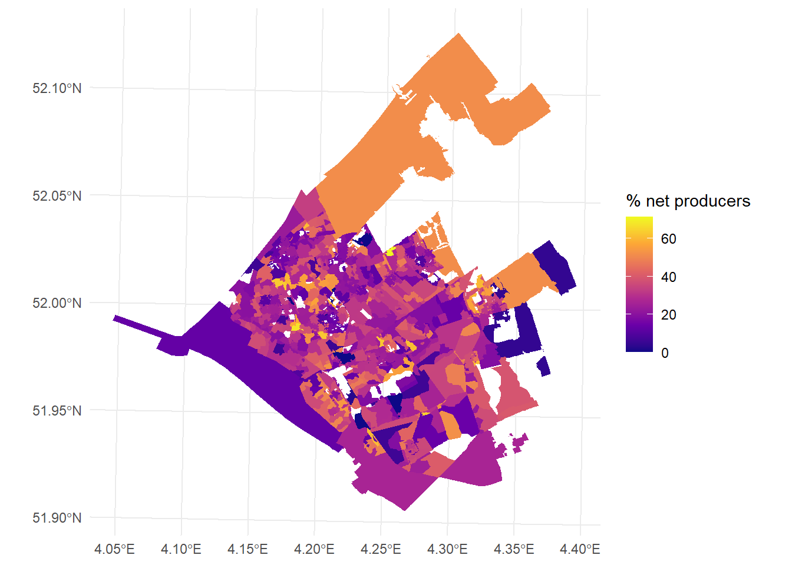
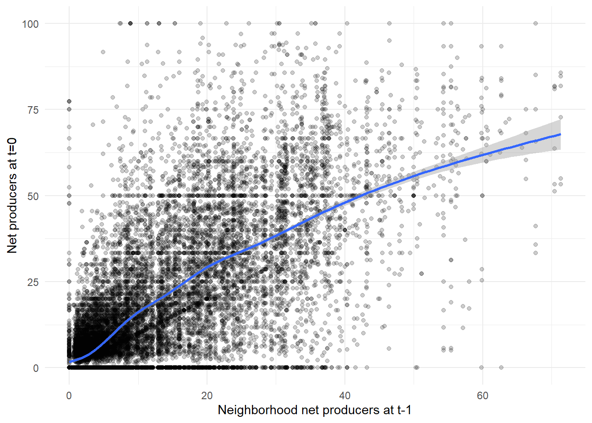

First analyses
Kalle Stoffers
2026-04-06
rm(list=ls())
library(tidyverse)## ── Attaching core tidyverse packages ──────────────────────── tidyverse 2.0.0 ──
## ✔ dplyr 1.1.4 ✔ readr 2.1.5
## ✔ forcats 1.0.1 ✔ stringr 1.6.0
## ✔ ggplot2 4.0.2 ✔ tibble 3.3.0
## ✔ lubridate 1.9.4 ✔ tidyr 1.3.1
## ✔ purrr 1.1.0
## ── Conflicts ────────────────────────────────────────── tidyverse_conflicts() ──
## ✖ dplyr::filter() masks stats::filter()
## ✖ dplyr::lag() masks stats::lag()
## ℹ Use the conflicted package (<http://conflicted.r-lib.org/>) to force all conflicts to become errorslibrary(sf)## Linking to GEOS 3.13.1, GDAL 3.11.4, PROJ 9.7.0; sf_use_s2() is TRUElibrary(tmap)
library(spdep)## Loading required package: spData
## To access larger datasets in this package, install the spDataLarge
## package with: `install.packages('spDataLarge',
## repos='https://nowosad.github.io/drat/', type='source')`library(lme4)## Loading required package: Matrix
##
## Attaching package: 'Matrix'
##
## The following objects are masked from 'package:tidyr':
##
## expand, pack, unpacklibrary(lmerTest)##
## Attaching package: 'lmerTest'
##
## The following object is masked from 'package:lme4':
##
## lmer
##
## The following object is masked from 'package:stats':
##
## steplibrary(performance)
library(see)
library(fixest)##
## Attaching package: 'fixest'
##
## The following object is masked from 'package:performance':
##
## r2library(clubSandwich)## Registered S3 method overwritten by 'clubSandwich':
## method from
## bread.mlm sandwichdf <- st_read("./data/df_analysis.gpkg")## Reading layer `df_analysis' from data source
## `C:\Users\kalle\OneDrive\Documenten\REMA\Thesis\labjournal_thesis_KS\labjournal_thesis_KS\data\df_analysis.gpkg'
## using driver `GPKG'
## Simple feature collection with 17085 features and 34 fields
## Geometry type: MULTIPOLYGON
## Dimension: XY
## Bounding box: xmin: 62856.61 ymin: 430398.8 xmax: 119527.1 ymax: 471972.6
## Projected CRS: Amersfoort / RD New1 Plots
Our dependent variable is the percentage of electricity connections in a postal code area that have a yearly net negative electricity usage. We see that most areas have a low proportion of net producers and that over time, this percentage has increased. (Data from 2021 and 2020 is missing because there was no CBS data from 2019 and 2020, but this should become available soon.)
hist(df$teruglevering)
df |>
group_by(year) |>
summarise(yearly_avg = mean(teruglevering, na.rm = TRUE)) |>
ggplot(aes(x = year, y = yearly_avg)) +
geom_line() +
geom_point() +
scale_y_continuous(limits = c(0, 100)) +
scale_x_continuous(breaks = seq(min(df$year), max(df$year), by = 2))+
theme_minimal()
Let’s plot the percentage of net producers on a map. First, using ggplot:
#on the street level
df |>
filter(year == 2024) |>
ggplot(
aes(fill = teruglevering)
) +
geom_sf(color = NA) +
scale_fill_viridis_c(option = "plasma", name = "% net producers") +
theme_minimal()
#neighborhood average:
df |>
filter(year == 2024) |>
ggplot(
aes(fill = nb_pv)
) +
geom_sf(color = NA) +
scale_fill_viridis_c(option = "plasma", name = "% net producers") +
theme_minimal()
Now we do the same using tmap. We see that some postal code areas are much larger than others. Furthermore, some areas are only available in some years.
#interactive map was too large and would not push
tmap_mode("plot")## ℹ tmap modes "plot" - "view"
## ℹ toggle with `tmap::ttm()`tm_shape(df) +
tm_fill("teruglevering") +
tm_facets_wrap(by = "year")
Calculate spatial autocorrelation over time, using “queen” contiguity to define the neighbors. There seems to be a decent amount of spatial autocorrelation, and it increases somewhat over time.
years <- c(2016:2019, 2022:2024)
moran_results_list <- list()
for (yr in years) {
# Filter for the specific year
df_yr <- df |> filter(year == yr)
# Create neighbor list
nb <- poly2nb(df_yr)
# Create weights list
lw <- nb2listw(nb, style = "W", zero.policy = TRUE)
# Run Moran's I test and store it in the list using the year as the name
moran_results_list[[as.character(yr)]] <- moran.test(df_yr$teruglevering,
lw,
zero.policy = TRUE)
}## Warning in poly2nb(df_yr): some observations have no neighbours;
## if this seems unexpected, try increasing the snap argument.## Warning in poly2nb(df_yr): neighbour object has 6 sub-graphs;
## if this sub-graph count seems unexpected, try increasing the snap argument.## Warning in poly2nb(df_yr): some observations have no neighbours;
## if this seems unexpected, try increasing the snap argument.## Warning in poly2nb(df_yr): neighbour object has 3 sub-graphs;
## if this sub-graph count seems unexpected, try increasing the snap argument.## Warning in poly2nb(df_yr): some observations have no neighbours;
## if this seems unexpected, try increasing the snap argument.## Warning in poly2nb(df_yr): neighbour object has 3 sub-graphs;
## if this sub-graph count seems unexpected, try increasing the snap argument.## Warning in poly2nb(df_yr): some observations have no neighbours;
## if this seems unexpected, try increasing the snap argument.## Warning in poly2nb(df_yr): neighbour object has 2 sub-graphs;
## if this sub-graph count seems unexpected, try increasing the snap argument.str(moran_results_list)## List of 7
## $ 2016:List of 6
## ..$ statistic : Named num 20.4
## .. ..- attr(*, "names")= chr "Moran I statistic standard deviate"
## ..$ p.value : num 7.04e-93
## ..$ estimate : Named num [1:3] 0.229432 -0.000426 0.000127
## .. ..- attr(*, "names")= chr [1:3] "Moran I statistic" "Expectation" "Variance"
## ..$ alternative: chr "greater"
## ..$ method : chr "Moran I test under randomisation"
## ..$ data.name : chr "df_yr$teruglevering \nweights: lw \n"
## ..- attr(*, "class")= chr "htest"
## $ 2017:List of 6
## ..$ statistic : Named num 20.3
## .. ..- attr(*, "names")= chr "Moran I statistic standard deviate"
## ..$ p.value : num 1.5e-91
## ..$ estimate : Named num [1:3] 0.226956 -0.000421 0.000126
## .. ..- attr(*, "names")= chr [1:3] "Moran I statistic" "Expectation" "Variance"
## ..$ alternative: chr "greater"
## ..$ method : chr "Moran I test under randomisation"
## ..$ data.name : chr "df_yr$teruglevering \nweights: lw \n"
## ..- attr(*, "class")= chr "htest"
## $ 2018:List of 6
## ..$ statistic : Named num 23.7
## .. ..- attr(*, "names")= chr "Moran I statistic standard deviate"
## ..$ p.value : num 3.87e-124
## ..$ estimate : Named num [1:3] 0.265515 -0.000416 0.000126
## .. ..- attr(*, "names")= chr [1:3] "Moran I statistic" "Expectation" "Variance"
## ..$ alternative: chr "greater"
## ..$ method : chr "Moran I test under randomisation"
## ..$ data.name : chr "df_yr$teruglevering \nweights: lw \n"
## ..- attr(*, "class")= chr "htest"
## $ 2019:List of 6
## ..$ statistic : Named num 23.2
## .. ..- attr(*, "names")= chr "Moran I statistic standard deviate"
## ..$ p.value : num 7.15e-119
## ..$ estimate : Named num [1:3] 0.258014 -0.000413 0.000125
## .. ..- attr(*, "names")= chr [1:3] "Moran I statistic" "Expectation" "Variance"
## ..$ alternative: chr "greater"
## ..$ method : chr "Moran I test under randomisation"
## ..$ data.name : chr "df_yr$teruglevering \nweights: lw \nn reduced by no-neighbour observations \n"
## ..- attr(*, "class")= chr "htest"
## $ 2022:List of 6
## ..$ statistic : Named num 26.4
## .. ..- attr(*, "names")= chr "Moran I statistic standard deviate"
## ..$ p.value : num 1.68e-153
## ..$ estimate : Named num [1:3] 0.293889 -0.0004 0.000125
## .. ..- attr(*, "names")= chr [1:3] "Moran I statistic" "Expectation" "Variance"
## ..$ alternative: chr "greater"
## ..$ method : chr "Moran I test under randomisation"
## ..$ data.name : chr "df_yr$teruglevering \nweights: lw \nn reduced by no-neighbour observations \n"
## ..- attr(*, "class")= chr "htest"
## $ 2023:List of 6
## ..$ statistic : Named num 26.1
## .. ..- attr(*, "names")= chr "Moran I statistic standard deviate"
## ..$ p.value : num 3.28e-150
## ..$ estimate : Named num [1:3] 0.289913 -0.0004 0.000124
## .. ..- attr(*, "names")= chr [1:3] "Moran I statistic" "Expectation" "Variance"
## ..$ alternative: chr "greater"
## ..$ method : chr "Moran I test under randomisation"
## ..$ data.name : chr "df_yr$teruglevering \nweights: lw \nn reduced by no-neighbour observations \n"
## ..- attr(*, "class")= chr "htest"
## $ 2024:List of 6
## ..$ statistic : Named num 26.8
## .. ..- attr(*, "names")= chr "Moran I statistic standard deviate"
## ..$ p.value : num 6.42e-159
## ..$ estimate : Named num [1:3] 0.298857 -0.000398 0.000124
## .. ..- attr(*, "names")= chr [1:3] "Moran I statistic" "Expectation" "Variance"
## ..$ alternative: chr "greater"
## ..$ method : chr "Moran I test under randomisation"
## ..$ data.name : chr "df_yr$teruglevering \nweights: lw \nn reduced by no-neighbour observations \n"
## ..- attr(*, "class")= chr "htest"Now let’s calculate the spatial autocorrelation based on a weight matrix defined by proximity instead of contiguity. Very low Moran’s I.
years <- c(2016:2019, 2022:2024)
moran_results_list <- list()
for (yr in years) {
# Filter for the specific year
df_yr <- df |> filter(year == yr)
# Extract centroids and coordinates
centroids <- st_centroid(df_yr)
coords <- st_coordinates(centroids)
# Compute full distance matrix between all centroids
D <- as.matrix(dist(coords))
# Compute proximity weights: W = 1 - (D / max(D))^2
max_D <- max(D)
W <- 1 - (D / max_D)^2
# Set diagonal to 0 (no self-neighbors)
diag(W) <- 0
# Convert to listw object
lw <- mat2listw(W, style = "W", zero.policy = TRUE)
# Run Moran's I test
moran_results_list[[as.character(yr)]] <- moran.test(df_yr$teruglevering,
lw,
zero.policy = TRUE)
}
str(moran_results_list)As a preliminary analysis, let’s look at the relationship between the percentage of net producers in the neighborhood at t-1 and the percentage of net producers at t0. It looks like there is an S-curve (sort of), in line with the literature on innovation adoption.
df |>
ggplot(aes(x = nb_pv, y = teruglevering)) +
geom_point(alpha = 0.2) +
geom_smooth() +
theme_minimal() +
xlab("Neighborhood net producers at t-1") +
ylab("Net producers at t=0")## `geom_smooth()` using method = 'gam' and formula = 'y ~ s(x, bs = "cs")'
2 First models
In RSiena I couldn’t find any effect that tested the strength of influence of similar others compared to dissimilar others, so I for now I have opted for panel regression analysis where I interact the effect neighborhood net producers (nb_pv) with neighborhood demographic diversity, income, etc.
In the models with see that neighborhood pv-adoption has a positive effect on pv-adoption, following a logistic curve.
df <- df|>
mutate(time = year - 2016)
#null-model, ICC = 34.7%.
#Most of the variation is within-streets over time, interesting!
model0 <- lmer(teruglevering ~ (1 | postcode_van), REML = F, data = df)
summary(model0)## Linear mixed model fit by maximum likelihood . t-tests use Satterthwaite's
## method [lmerModLmerTest]
## Formula: teruglevering ~ (1 | postcode_van)
## Data: df
##
## AIC BIC logLik -2*log(L) df.resid
## 148756.8 148780.0 -74375.4 148750.8 17082
##
## Scaled residuals:
## Min 1Q Median 3Q Max
## -3.0143 -0.6358 -0.2172 0.5246 4.8492
##
## Random effects:
## Groups Name Variance Std.Dev.
## postcode_van (Intercept) 149.9 12.24
## Residual 282.3 16.80
## Number of obs: 17085, groups: postcode_van, 2595
##
## Fixed effects:
## Estimate Std. Error df t value Pr(>|t|)
## (Intercept) 16.8393 0.2743 2290.3020 61.39 <2e-16 ***
## ---
## Signif. codes: 0 '***' 0.001 '**' 0.01 '*' 0.05 '.' 0.1 ' ' 1149.9 / (149.9 + 282.3)## [1] 0.3468302#model1 with random interept and fixed effect of time
model1 <- lmer(teruglevering ~ (1 | postcode_van) + time, REML = F, data = df)
summary(model1)## Linear mixed model fit by maximum likelihood . t-tests use Satterthwaite's
## method [lmerModLmerTest]
## Formula: teruglevering ~ (1 | postcode_van) + time
## Data: df
##
## AIC BIC logLik -2*log(L) df.resid
## 135386.9 135417.9 -67689.5 135378.9 17081
##
## Scaled residuals:
## Min 1Q Median 3Q Max
## -4.1183 -0.6288 -0.0281 0.5679 6.0487
##
## Random effects:
## Groups Name Variance Std.Dev.
## postcode_van (Intercept) 161.8 12.72
## Residual 113.8 10.67
## Number of obs: 17085, groups: postcode_van, 2595
##
## Fixed effects:
## Estimate Std. Error df t value Pr(>|t|)
## (Intercept) 3.253e-01 2.874e-01 3.440e+03 1.132 0.258
## time 4.187e+00 2.853e-02 1.455e+04 146.755 <2e-16 ***
## ---
## Signif. codes: 0 '***' 0.001 '**' 0.01 '*' 0.05 '.' 0.1 ' ' 1
##
## Correlation of Fixed Effects:
## (Intr)
## time -0.397#model2 with random effect of time
model2 <- lmer(teruglevering ~ (1 + time | postcode_van) + time, REML = F, data = df)
summary(model2)## Linear mixed model fit by maximum likelihood . t-tests use Satterthwaite's
## method [lmerModLmerTest]
## Formula: teruglevering ~ (1 + time | postcode_van) + time
## Data: df
##
## AIC BIC logLik -2*log(L) df.resid
## 126471.6 126518.1 -63229.8 126459.6 17079
##
## Scaled residuals:
## Min 1Q Median 3Q Max
## -6.7946 -0.3744 0.0119 0.3707 8.0029
##
## Random effects:
## Groups Name Variance Std.Dev. Corr
## postcode_van (Intercept) 57.84 7.605
## time 7.28 2.698 -0.10
## Residual 48.62 6.973
## Number of obs: 17085, groups: postcode_van, 2595
##
## Fixed effects:
## Estimate Std. Error df t value Pr(>|t|)
## (Intercept) -0.40572 0.17808 2299.68785 -2.278 0.0228 *
## time 4.29180 0.05662 2499.36078 75.800 <2e-16 ***
## ---
## Signif. codes: 0 '***' 0.001 '**' 0.01 '*' 0.05 '.' 0.1 ' ' 1
##
## Correlation of Fixed Effects:
## (Intr)
## time -0.228#model3 with random intercept and random effect of time and fixed effect of time and nb_pv
model3 <- lmer(teruglevering ~ (1 + time | postcode_van) + time + nb_pv, REML = F, data = df)
summary(model3)## Linear mixed model fit by maximum likelihood . t-tests use Satterthwaite's
## method [lmerModLmerTest]
## Formula: teruglevering ~ (1 + time | postcode_van) + time + nb_pv
## Data: df
##
## AIC BIC logLik -2*log(L) df.resid
## 123969.4 124023.6 -61977.7 123955.4 17078
##
## Scaled residuals:
## Min 1Q Median 3Q Max
## -6.1951 -0.4089 0.0138 0.3450 8.2433
##
## Random effects:
## Groups Name Variance Std.Dev. Corr
## postcode_van (Intercept) 45.301 6.731
## time 6.007 2.451 -0.16
## Residual 43.184 6.571
## Number of obs: 17085, groups: postcode_van, 2595
##
## Fixed effects:
## Estimate Std. Error df t value Pr(>|t|)
## (Intercept) -3.110e-01 1.604e-01 2.288e+03 -1.939 0.0527 .
## time 2.265e+00 6.464e-02 5.219e+03 35.039 <2e-16 ***
## nb_pv 6.665e-01 1.276e-02 1.645e+04 52.229 <2e-16 ***
## ---
## Signif. codes: 0 '***' 0.001 '**' 0.01 '*' 0.05 '.' 0.1 ' ' 1
##
## Correlation of Fixed Effects:
## (Intr) time
## time -0.239
## nb_pv 0.015 -0.601#model4 with random intercept and random effect of time and nb_pv
model4 <- lmer(teruglevering ~ (1 + time + nb_pv | postcode_van) + time + nb_pv, REML = F, data = df)
summary(model4)## Linear mixed model fit by maximum likelihood . t-tests use Satterthwaite's
## method [lmerModLmerTest]
## Formula: teruglevering ~ (1 + time + nb_pv | postcode_van) + time + nb_pv
## Data: df
##
## AIC BIC logLik -2*log(L) df.resid
## 123144.5 123222.0 -61562.3 123124.5 17075
##
## Scaled residuals:
## Min 1Q Median 3Q Max
## -6.0162 -0.3663 0.0150 0.3147 7.8334
##
## Random effects:
## Groups Name Variance Std.Dev. Corr
## postcode_van (Intercept) 32.7000 5.7184
## time 6.6252 2.5739 -0.06
## nb_pv 0.3731 0.6108 -0.14 -0.39
## Residual 37.6172 6.1333
## Number of obs: 17085, groups: postcode_van, 2595
##
## Fixed effects:
## Estimate Std. Error df t value Pr(>|t|)
## (Intercept) -0.32190 0.14264 1946.04688 -2.257 0.0241 *
## time 2.11814 0.06704 2376.16826 31.596 <2e-16 ***
## nb_pv 0.74860 0.01856 2074.95028 40.324 <2e-16 ***
## ---
## Signif. codes: 0 '***' 0.001 '**' 0.01 '*' 0.05 '.' 0.1 ' ' 1
##
## Correlation of Fixed Effects:
## (Intr) time
## time -0.181
## nb_pv -0.045 -0.635#model5
df <- df |>
mutate(nb_pv_sq = nb_pv^2,
nb_pv_log = 1 / (1 + exp(-nb_pv))
)
#with nb_pv squared
model5_1 <- lmer(teruglevering ~ (1 + time + nb_pv | postcode_van) + time + nb_pv + nb_pv_sq, REML = F, data = df)
summary(model5_1)## Linear mixed model fit by maximum likelihood . t-tests use Satterthwaite's
## method [lmerModLmerTest]
## Formula: teruglevering ~ (1 + time + nb_pv | postcode_van) + time + nb_pv +
## nb_pv_sq
## Data: df
##
## AIC BIC logLik -2*log(L) df.resid
## 123099.2 123184.4 -61538.6 123077.2 17074
##
## Scaled residuals:
## Min 1Q Median 3Q Max
## -6.0041 -0.3661 0.0173 0.3186 7.8345
##
## Random effects:
## Groups Name Variance Std.Dev. Corr
## postcode_van (Intercept) 30.9767 5.5657
## time 6.4661 2.5429 -0.08
## nb_pv 0.3569 0.5974 -0.11 -0.37
## Residual 37.8949 6.1559
## Number of obs: 17085, groups: postcode_van, 2595
##
## Fixed effects:
## Estimate Std. Error df t value Pr(>|t|)
## (Intercept) -7.274e-01 1.508e-01 2.253e+03 -4.824 1.50e-06 ***
## time 1.983e+00 6.913e-02 2.623e+03 28.689 < 2e-16 ***
## nb_pv 9.099e-01 2.935e-02 8.487e+03 31.005 < 2e-16 ***
## nb_pv_sq -3.942e-03 5.567e-04 1.192e+04 -7.081 1.51e-12 ***
## ---
## Signif. codes: 0 '***' 0.001 '**' 0.01 '*' 0.05 '.' 0.1 ' ' 1
##
## Correlation of Fixed Effects:
## (Intr) time nb_pv
## time -0.079
## nb_pv -0.303 -0.589
## nb_pv_sq 0.367 0.269 -0.779#with logistic function of nb_pv ("S-curve")
#higher significance and lower BIC so we stick with nb_pv_log
model5_2 <- lmer(teruglevering ~ (1 + time + nb_pv | postcode_van) + time + nb_pv + nb_pv_log, REML = F, data = df)
summary(model5_2)## Linear mixed model fit by maximum likelihood . t-tests use Satterthwaite's
## method [lmerModLmerTest]
## Formula: teruglevering ~ (1 + time + nb_pv | postcode_van) + time + nb_pv +
## nb_pv_log
## Data: df
##
## AIC BIC logLik -2*log(L) df.resid
## 123086.9 123172.1 -61532.5 123064.9 17074
##
## Scaled residuals:
## Min 1Q Median 3Q Max
## -6.0701 -0.3679 0.0033 0.3141 7.8570
##
## Random effects:
## Groups Name Variance Std.Dev. Corr
## postcode_van (Intercept) 35.4052 5.9502
## time 6.4895 2.5474 -0.04
## nb_pv 0.3682 0.6068 -0.16 -0.39
## Residual 37.1028 6.0912
## Number of obs: 17085, groups: postcode_van, 2595
##
## Fixed effects:
## Estimate Std. Error df t value Pr(>|t|)
## (Intercept) 5.02589 0.68664 6024.37062 7.320 2.81e-13 ***
## time 2.26198 0.06874 2672.30437 32.908 < 2e-16 ***
## nb_pv 0.74218 0.01847 2066.42429 40.180 < 2e-16 ***
## nb_pv_log -6.20884 0.78138 6504.78172 -7.946 2.25e-15 ***
## ---
## Signif. codes: 0 '***' 0.001 '**' 0.01 '*' 0.05 '.' 0.1 ' ' 1
##
## Correlation of Fixed Effects:
## (Intr) time nb_pv
## time 0.213
## nb_pv -0.039 -0.618
## nb_pv_log -0.977 -0.253 0.027Because of the different scales, we standardize all variables. We add the CBS demographic information as interaction variables on the nb_pv variable.
model6 <- lmer(scale(teruglevering) ~ (1 + time + scale(nb_pv) | postcode_van)
+ scale(nb_pv) * (
+ scale(percentage_hoog_inkomen_huishouden)
+ scale(percentage_laag_inkomen_huishouden)
+ scale(gemiddelde_woz_waarde_woning)
+ scale(solar_cost)
+ scale(electricity_price)
+ scale(economic_diversity)
+ scale(ethnic_diversity)
+ scale(age_diversity)
+ scale(omgevingsadressendichtheid)
+ scale(stedelijkheid)
+ scale(percentage_koopwoningen))
+ time
+ scale(nb_pv)
+ scale(nb_pv_log), REML = F, data = df)
summary(model6)## Linear mixed model fit by maximum likelihood . t-tests use Satterthwaite's
## method [lmerModLmerTest]
## Formula: scale(teruglevering) ~ (1 + time + scale(nb_pv) | postcode_van) +
## scale(nb_pv) * (+scale(percentage_hoog_inkomen_huishouden) +
## scale(percentage_laag_inkomen_huishouden) + scale(gemiddelde_woz_waarde_woning) +
## scale(solar_cost) + scale(electricity_price) + scale(economic_diversity) +
## scale(ethnic_diversity) + scale(age_diversity) + scale(omgevingsadressendichtheid) +
## scale(stedelijkheid) + scale(percentage_koopwoningen)) +
## time + scale(nb_pv) + scale(nb_pv_log)
## Data: df
##
## AIC BIC logLik -2*log(L) df.resid
## 11789.2 12031.2 -5861.6 11723.2 11258
##
## Scaled residuals:
## Min 1Q Median 3Q Max
## -6.4433 -0.4004 0.0251 0.3710 7.7316
##
## Random effects:
## Groups Name Variance Std.Dev. Corr
## postcode_van (Intercept) 0.21533 0.4640
## time 0.01516 0.1231 -0.52
## scale(nb_pv) 0.12131 0.3483 0.69 -0.42
## Residual 0.07134 0.2671
## Number of obs: 11291, groups: postcode_van, 1814
##
## Fixed effects:
## Estimate Std. Error
## (Intercept) -4.840e-01 2.443e-02
## scale(nb_pv) 1.697e-01 1.864e-02
## scale(percentage_hoog_inkomen_huishouden) 2.573e-02 1.603e-02
## scale(percentage_laag_inkomen_huishouden) -1.000e-02 1.774e-02
## scale(gemiddelde_woz_waarde_woning) 2.395e-01 1.435e-02
## scale(solar_cost) -9.477e-02 1.077e-02
## scale(electricity_price) 3.542e-02 5.368e-03
## scale(economic_diversity) -1.099e-02 9.984e-03
## scale(ethnic_diversity) -3.962e-03 8.131e-03
## scale(age_diversity) -3.003e-02 1.783e-02
## scale(omgevingsadressendichtheid) 4.787e-02 2.000e-02
## scale(stedelijkheid) 5.361e-02 1.974e-02
## scale(percentage_koopwoningen) 6.397e-02 1.029e-02
## time 1.243e-01 5.637e-03
## scale(nb_pv_log) -4.086e-02 8.202e-03
## scale(nb_pv):scale(percentage_hoog_inkomen_huishouden) -4.228e-02 1.382e-02
## scale(nb_pv):scale(percentage_laag_inkomen_huishouden) -5.773e-03 1.728e-02
## scale(nb_pv):scale(gemiddelde_woz_waarde_woning) -5.900e-02 8.999e-03
## scale(nb_pv):scale(solar_cost) -1.627e-01 1.171e-02
## scale(nb_pv):scale(electricity_price) -2.848e-02 4.415e-03
## scale(nb_pv):scale(economic_diversity) 5.558e-03 8.677e-03
## scale(nb_pv):scale(ethnic_diversity) -2.880e-02 7.369e-03
## scale(nb_pv):scale(age_diversity) -6.242e-02 1.550e-02
## scale(nb_pv):scale(omgevingsadressendichtheid) -2.538e-02 1.857e-02
## scale(nb_pv):scale(stedelijkheid) -2.302e-02 1.968e-02
## scale(nb_pv):scale(percentage_koopwoningen) 7.333e-02 9.383e-03
## df t value
## (Intercept) 5.179e+03 -19.810
## scale(nb_pv) 3.900e+03 9.104
## scale(percentage_hoog_inkomen_huishouden) 6.139e+03 1.605
## scale(percentage_laag_inkomen_huishouden) 5.663e+03 -0.564
## scale(gemiddelde_woz_waarde_woning) 3.609e+03 16.691
## scale(solar_cost) 8.493e+03 -8.802
## scale(electricity_price) 7.376e+03 6.597
## scale(economic_diversity) 5.618e+03 -1.101
## scale(ethnic_diversity) 9.425e+03 -0.487
## scale(age_diversity) 5.927e+03 -1.684
## scale(omgevingsadressendichtheid) 4.509e+03 2.393
## scale(stedelijkheid) 7.552e+03 2.716
## scale(percentage_koopwoningen) 3.233e+03 6.219
## time 5.376e+03 22.054
## scale(nb_pv_log) 7.063e+03 -4.982
## scale(nb_pv):scale(percentage_hoog_inkomen_huishouden) 3.003e+03 -3.059
## scale(nb_pv):scale(percentage_laag_inkomen_huishouden) 2.903e+03 -0.334
## scale(nb_pv):scale(gemiddelde_woz_waarde_woning) 4.043e+03 -6.557
## scale(nb_pv):scale(solar_cost) 8.696e+03 -13.886
## scale(nb_pv):scale(electricity_price) 8.524e+03 -6.452
## scale(nb_pv):scale(economic_diversity) 2.606e+03 0.641
## scale(nb_pv):scale(ethnic_diversity) 7.154e+03 -3.908
## scale(nb_pv):scale(age_diversity) 3.736e+03 -4.026
## scale(nb_pv):scale(omgevingsadressendichtheid) 2.663e+03 -1.367
## scale(nb_pv):scale(stedelijkheid) 3.659e+03 -1.170
## scale(nb_pv):scale(percentage_koopwoningen) 2.000e+03 7.815
## Pr(>|t|)
## (Intercept) < 2e-16 ***
## scale(nb_pv) < 2e-16 ***
## scale(percentage_hoog_inkomen_huishouden) 0.10847
## scale(percentage_laag_inkomen_huishouden) 0.57288
## scale(gemiddelde_woz_waarde_woning) < 2e-16 ***
## scale(solar_cost) < 2e-16 ***
## scale(electricity_price) 4.47e-11 ***
## scale(economic_diversity) 0.27091
## scale(ethnic_diversity) 0.62607
## scale(age_diversity) 0.09214 .
## scale(omgevingsadressendichtheid) 0.01674 *
## scale(stedelijkheid) 0.00662 **
## scale(percentage_koopwoningen) 5.65e-10 ***
## time < 2e-16 ***
## scale(nb_pv_log) 6.46e-07 ***
## scale(nb_pv):scale(percentage_hoog_inkomen_huishouden) 0.00224 **
## scale(nb_pv):scale(percentage_laag_inkomen_huishouden) 0.73830
## scale(nb_pv):scale(gemiddelde_woz_waarde_woning) 6.20e-11 ***
## scale(nb_pv):scale(solar_cost) < 2e-16 ***
## scale(nb_pv):scale(electricity_price) 1.16e-10 ***
## scale(nb_pv):scale(economic_diversity) 0.52188
## scale(nb_pv):scale(ethnic_diversity) 9.38e-05 ***
## scale(nb_pv):scale(age_diversity) 5.79e-05 ***
## scale(nb_pv):scale(omgevingsadressendichtheid) 0.17190
## scale(nb_pv):scale(stedelijkheid) 0.24225
## scale(nb_pv):scale(percentage_koopwoningen) 8.84e-15 ***
## ---
## Signif. codes: 0 '***' 0.001 '**' 0.01 '*' 0.05 '.' 0.1 ' ' 1##
## Correlation matrix not shown by default, as p = 26 > 12.
## Use print(x, correlation=TRUE) or
## vcov(x) if you need it#check for multicollinearity
multicollinearity(model6)## # Check for Multicollinearity
##
## Low Correlation
##
## Term VIF VIF 95% CI
## scale(nb_pv) 3.87 [3.74, 3.99]
## scale(percentage_hoog_inkomen_huishouden) 3.78 [3.67, 3.91]
## scale(percentage_laag_inkomen_huishouden) 4.57 [4.42, 4.72]
## scale(gemiddelde_woz_waarde_woning) 2.09 [2.04, 2.15]
## scale(solar_cost) 3.51 [3.40, 3.63]
## scale(electricity_price) 3.42 [3.31, 3.53]
## scale(economic_diversity) 1.44 [1.41, 1.48]
## scale(ethnic_diversity) 1.28 [1.25, 1.31]
## scale(age_diversity) 1.39 [1.36, 1.43]
## scale(omgevingsadressendichtheid) 4.78 [4.63, 4.94]
## scale(stedelijkheid) 4.59 [4.44, 4.74]
## scale(percentage_koopwoningen) 1.85 [1.80, 1.90]
## time 3.74 [3.63, 3.87]
## scale(nb_pv_log) 1.88 [1.83, 1.93]
## scale(nb_pv):scale(percentage_hoog_inkomen_huishouden) 4.06 [3.93, 4.20]
## scale(nb_pv):scale(gemiddelde_woz_waarde_woning) 2.64 [2.56, 2.72]
## scale(nb_pv):scale(electricity_price) 4.46 [4.32, 4.61]
## scale(nb_pv):scale(economic_diversity) 1.42 [1.39, 1.46]
## scale(nb_pv):scale(ethnic_diversity) 1.32 [1.29, 1.35]
## scale(nb_pv):scale(age_diversity) 1.39 [1.36, 1.43]
## scale(nb_pv):scale(percentage_koopwoningen) 1.86 [1.81, 1.91]
## adj. VIF Tolerance Tolerance 95% CI
## 1.97 0.26 [0.25, 0.27]
## 1.95 0.26 [0.26, 0.27]
## 2.14 0.22 [0.21, 0.23]
## 1.45 0.48 [0.46, 0.49]
## 1.87 0.28 [0.28, 0.29]
## 1.85 0.29 [0.28, 0.30]
## 1.20 0.69 [0.68, 0.71]
## 1.13 0.78 [0.76, 0.80]
## 1.18 0.72 [0.70, 0.74]
## 2.19 0.21 [0.20, 0.22]
## 2.14 0.22 [0.21, 0.23]
## 1.36 0.54 [0.53, 0.55]
## 1.94 0.27 [0.26, 0.28]
## 1.37 0.53 [0.52, 0.55]
## 2.02 0.25 [0.24, 0.25]
## 1.63 0.38 [0.37, 0.39]
## 2.11 0.22 [0.22, 0.23]
## 1.19 0.70 [0.69, 0.72]
## 1.15 0.76 [0.74, 0.78]
## 1.18 0.72 [0.70, 0.74]
## 1.36 0.54 [0.52, 0.55]
##
## Moderate Correlation
##
## Term VIF VIF 95% CI
## scale(nb_pv):scale(percentage_laag_inkomen_huishouden) 5.33 [5.16, 5.51]
## scale(nb_pv):scale(solar_cost) 6.57 [6.35, 6.80]
## scale(nb_pv):scale(omgevingsadressendichtheid) 5.78 [5.59, 5.98]
## scale(nb_pv):scale(stedelijkheid) 5.64 [5.46, 5.83]
## adj. VIF Tolerance Tolerance 95% CI
## 2.31 0.19 [0.18, 0.19]
## 2.56 0.15 [0.15, 0.16]
## 2.40 0.17 [0.17, 0.18]
## 2.38 0.18 [0.17, 0.18]#moderate correlations (VIF >5) for interaction terms with #percentage_laag_inkomen_huishouden, solar_cost, omgevingsadressendichtheid, #stedelijkheid. So we chose only one density measure (omgevingsadressendichtheid),
#and remove solar_cost, this probably correlates too much with time.
model7 <- lmer(scale(teruglevering) ~ (1 + time + scale(nb_pv) | postcode_van)
+ scale(nb_pv) * (
+ scale(percentage_hoog_inkomen_huishouden)
+ scale(percentage_laag_inkomen_huishouden)
+ scale(gemiddelde_woz_waarde_woning)
+ scale(electricity_price)
+ scale(economic_diversity)
+ scale(ethnic_diversity)
+ scale(age_diversity)
+ scale(omgevingsadressendichtheid)
+ scale(percentage_koopwoningen)
+ time)
+ scale(nb_pv)
+ scale(nb_pv_log), REML = F, data = df)
summary(model7)## Linear mixed model fit by maximum likelihood . t-tests use Satterthwaite's
## method [lmerModLmerTest]
## Formula: scale(teruglevering) ~ (1 + time + scale(nb_pv) | postcode_van) +
## scale(nb_pv) * (+scale(percentage_hoog_inkomen_huishouden) +
## scale(percentage_laag_inkomen_huishouden) + scale(gemiddelde_woz_waarde_woning) +
## scale(electricity_price) + scale(economic_diversity) +
## scale(ethnic_diversity) + scale(age_diversity) + scale(omgevingsadressendichtheid) +
## scale(percentage_koopwoningen) + time) + scale(nb_pv) +
## scale(nb_pv_log)
## Data: df
##
## AIC BIC logLik -2*log(L) df.resid
## 11964.9 12184.9 -5952.5 11904.9 11261
##
## Scaled residuals:
## Min 1Q Median 3Q Max
## -6.2178 -0.4029 0.0317 0.3729 7.6700
##
## Random effects:
## Groups Name Variance Std.Dev. Corr
## postcode_van (Intercept) 0.20465 0.4524
## time 0.01452 0.1205 -0.51
## scale(nb_pv) 0.11202 0.3347 0.68 -0.42
## Residual 0.07437 0.2727
## Number of obs: 11291, groups: postcode_van, 1814
##
## Fixed effects:
## Estimate Std. Error
## (Intercept) -4.702e-01 2.862e-02
## scale(nb_pv) 1.876e-01 3.482e-02
## scale(percentage_hoog_inkomen_huishouden) 4.003e-02 1.608e-02
## scale(percentage_laag_inkomen_huishouden) 8.470e-03 1.748e-02
## scale(gemiddelde_woz_waarde_woning) 2.651e-01 1.451e-02
## scale(electricity_price) 5.702e-02 4.919e-03
## scale(economic_diversity) -1.377e-02 9.990e-03
## scale(ethnic_diversity) -9.116e-03 8.148e-03
## scale(age_diversity) -1.577e-02 1.794e-02
## scale(omgevingsadressendichtheid) 3.440e-04 1.162e-02
## scale(percentage_koopwoningen) 5.249e-02 1.027e-02
## time 1.401e-01 5.586e-03
## scale(nb_pv_log) -7.393e-02 8.294e-03
## scale(nb_pv):scale(percentage_hoog_inkomen_huishouden) -3.009e-02 1.356e-02
## scale(nb_pv):scale(percentage_laag_inkomen_huishouden) 5.591e-03 1.665e-02
## scale(nb_pv):scale(gemiddelde_woz_waarde_woning) -4.268e-02 9.962e-03
## scale(nb_pv):scale(electricity_price) 3.373e-03 3.797e-03
## scale(nb_pv):scale(economic_diversity) 1.182e-03 8.597e-03
## scale(nb_pv):scale(ethnic_diversity) -3.157e-02 7.428e-03
## scale(nb_pv):scale(age_diversity) -5.108e-02 1.549e-02
## scale(nb_pv):scale(omgevingsadressendichtheid) -3.904e-03 9.876e-03
## scale(nb_pv):scale(percentage_koopwoningen) 6.021e-02 9.312e-03
## scale(nb_pv):time 1.528e-02 4.483e-03
## df t value
## (Intercept) 3.995e+03 -16.426
## scale(nb_pv) 5.605e+03 5.388
## scale(percentage_hoog_inkomen_huishouden) 6.064e+03 2.490
## scale(percentage_laag_inkomen_huishouden) 5.270e+03 0.484
## scale(gemiddelde_woz_waarde_woning) 3.783e+03 18.277
## scale(electricity_price) 7.158e+03 11.591
## scale(economic_diversity) 5.454e+03 -1.378
## scale(ethnic_diversity) 9.285e+03 -1.119
## scale(age_diversity) 5.840e+03 -0.879
## scale(omgevingsadressendichtheid) 1.980e+03 0.030
## scale(percentage_koopwoningen) 3.155e+03 5.110
## time 3.562e+03 25.074
## scale(nb_pv_log) 6.914e+03 -8.914
## scale(nb_pv):scale(percentage_hoog_inkomen_huishouden) 2.871e+03 -2.219
## scale(nb_pv):scale(percentage_laag_inkomen_huishouden) 2.680e+03 0.336
## scale(nb_pv):scale(gemiddelde_woz_waarde_woning) 2.744e+03 -4.284
## scale(nb_pv):scale(electricity_price) 8.206e+03 0.888
## scale(nb_pv):scale(economic_diversity) 2.440e+03 0.137
## scale(nb_pv):scale(ethnic_diversity) 6.794e+03 -4.250
## scale(nb_pv):scale(age_diversity) 3.503e+03 -3.298
## scale(nb_pv):scale(omgevingsadressendichtheid) 1.526e+03 -0.395
## scale(nb_pv):scale(percentage_koopwoningen) 1.949e+03 6.466
## scale(nb_pv):time 6.706e+03 3.409
## Pr(>|t|)
## (Intercept) < 2e-16 ***
## scale(nb_pv) 7.43e-08 ***
## scale(percentage_hoog_inkomen_huishouden) 0.012812 *
## scale(percentage_laag_inkomen_huishouden) 0.628070
## scale(gemiddelde_woz_waarde_woning) < 2e-16 ***
## scale(electricity_price) < 2e-16 ***
## scale(economic_diversity) 0.168232
## scale(ethnic_diversity) 0.263261
## scale(age_diversity) 0.379388
## scale(omgevingsadressendichtheid) 0.976385
## scale(percentage_koopwoningen) 3.42e-07 ***
## time < 2e-16 ***
## scale(nb_pv_log) < 2e-16 ***
## scale(nb_pv):scale(percentage_hoog_inkomen_huishouden) 0.026579 *
## scale(nb_pv):scale(percentage_laag_inkomen_huishouden) 0.737081
## scale(nb_pv):scale(gemiddelde_woz_waarde_woning) 1.90e-05 ***
## scale(nb_pv):scale(electricity_price) 0.374423
## scale(nb_pv):scale(economic_diversity) 0.890676
## scale(nb_pv):scale(ethnic_diversity) 2.17e-05 ***
## scale(nb_pv):scale(age_diversity) 0.000982 ***
## scale(nb_pv):scale(omgevingsadressendichtheid) 0.692714
## scale(nb_pv):scale(percentage_koopwoningen) 1.27e-10 ***
## scale(nb_pv):time 0.000655 ***
## ---
## Signif. codes: 0 '***' 0.001 '**' 0.01 '*' 0.05 '.' 0.1 ' ' 1##
## Correlation matrix not shown by default, as p = 23 > 12.
## Use print(x, correlation=TRUE) or
## vcov(x) if you need itmulticollinearity(model7)## Model has interaction terms. VIFs might be inflated.
## Try to center the variables used for the interaction, or check
## multicollinearity among predictors of a model without interaction terms.## # Check for Multicollinearity
##
## Low Correlation
##
## Term VIF VIF 95% CI
## scale(percentage_hoog_inkomen_huishouden) 3.80 [ 3.68, 3.92]
## scale(percentage_laag_inkomen_huishouden) 4.43 [ 4.29, 4.58]
## scale(gemiddelde_woz_waarde_woning) 2.16 [ 2.10, 2.22]
## scale(electricity_price) 2.77 [ 2.69, 2.85]
## scale(economic_diversity) 1.43 [ 1.40, 1.47]
## scale(ethnic_diversity) 1.27 [ 1.25, 1.30]
## scale(age_diversity) 1.40 [ 1.37, 1.43]
## scale(omgevingsadressendichtheid) 1.62 [ 1.58, 1.66]
## scale(percentage_koopwoningen) 1.84 [ 1.79, 1.89]
## time 3.80 [ 3.69, 3.93]
## scale(nb_pv_log) 1.91 [ 1.86, 1.96]
## scale(nb_pv):scale(percentage_hoog_inkomen_huishouden) 4.03 [ 3.90, 4.16]
## scale(nb_pv):scale(gemiddelde_woz_waarde_woning) 3.25 [ 3.15, 3.35]
## scale(nb_pv):scale(electricity_price) 3.18 [ 3.08, 3.28]
## scale(nb_pv):scale(economic_diversity) 1.43 [ 1.39, 1.46]
## scale(nb_pv):scale(ethnic_diversity) 1.33 [ 1.30, 1.36]
## scale(nb_pv):scale(age_diversity) 1.41 [ 1.38, 1.45]
## scale(nb_pv):scale(omgevingsadressendichtheid) 1.68 [ 1.64, 1.73]
## scale(nb_pv):scale(percentage_koopwoningen) 1.87 [ 1.82, 1.93]
## adj. VIF Tolerance Tolerance 95% CI
## 1.95 0.26 [0.25, 0.27]
## 2.10 0.23 [0.22, 0.23]
## 1.47 0.46 [0.45, 0.48]
## 1.66 0.36 [0.35, 0.37]
## 1.20 0.70 [0.68, 0.71]
## 1.13 0.79 [0.77, 0.80]
## 1.18 0.71 [0.70, 0.73]
## 1.27 0.62 [0.60, 0.63]
## 1.36 0.54 [0.53, 0.56]
## 1.95 0.26 [0.25, 0.27]
## 1.38 0.52 [0.51, 0.54]
## 2.01 0.25 [0.24, 0.26]
## 1.80 0.31 [0.30, 0.32]
## 1.78 0.31 [0.31, 0.32]
## 1.19 0.70 [0.68, 0.72]
## 1.15 0.75 [0.73, 0.77]
## 1.19 0.71 [0.69, 0.72]
## 1.30 0.59 [0.58, 0.61]
## 1.37 0.53 [0.52, 0.55]
##
## Moderate Correlation
##
## Term VIF VIF 95% CI
## scale(nb_pv):scale(percentage_laag_inkomen_huishouden) 5.09 [ 4.92, 5.26]
## adj. VIF Tolerance Tolerance 95% CI
## 2.26 0.20 [0.19, 0.20]
##
## High Correlation
##
## Term VIF VIF 95% CI adj. VIF Tolerance Tolerance 95% CI
## scale(nb_pv) 14.09 [13.60, 14.60] 3.75 0.07 [0.07, 0.07]
## scale(nb_pv):time 14.09 [13.60, 14.60] 3.75 0.07 [0.07, 0.07]#time:nb_pv also too much multicollinearity so we leave it out
model8 <- lmer(scale(teruglevering) ~ (1 + time + scale(nb_pv) | postcode_van)
+ scale(nb_pv) * (
+ scale(percentage_hoog_inkomen_huishouden)
+ scale(percentage_laag_inkomen_huishouden)
+ scale(gemiddelde_woz_waarde_woning)
+ scale(electricity_price)
+ scale(economic_diversity)
+ scale(ethnic_diversity)
+ scale(age_diversity)
+ scale(omgevingsadressendichtheid)
+ scale(percentage_koopwoningen))
+ time
+ scale(nb_pv)
+ scale(nb_pv_log), REML = F, data = df)
summary(model8)## Linear mixed model fit by maximum likelihood . t-tests use Satterthwaite's
## method [lmerModLmerTest]
## Formula: scale(teruglevering) ~ (1 + time + scale(nb_pv) | postcode_van) +
## scale(nb_pv) * (+scale(percentage_hoog_inkomen_huishouden) +
## scale(percentage_laag_inkomen_huishouden) + scale(gemiddelde_woz_waarde_woning) +
## scale(electricity_price) + scale(economic_diversity) +
## scale(ethnic_diversity) + scale(age_diversity) + scale(omgevingsadressendichtheid) +
## scale(percentage_koopwoningen)) + time + scale(nb_pv) +
## scale(nb_pv_log)
## Data: df
##
## AIC BIC logLik -2*log(L) df.resid
## 11973.9 12186.5 -5957.9 11915.9 11262
##
## Scaled residuals:
## Min 1Q Median 3Q Max
## -6.1718 -0.4046 0.0306 0.3755 7.6631
##
## Random effects:
## Groups Name Variance Std.Dev. Corr
## postcode_van (Intercept) 0.20148 0.4489
## time 0.01434 0.1198 -0.50
## scale(nb_pv) 0.10995 0.3316 0.69 -0.43
## Residual 0.07511 0.2741
## Number of obs: 11291, groups: postcode_van, 1814
##
## Fixed effects:
## Estimate Std. Error
## (Intercept) -4.040e-01 2.092e-02
## scale(nb_pv) 2.932e-01 1.625e-02
## scale(percentage_hoog_inkomen_huishouden) 3.554e-02 1.599e-02
## scale(percentage_laag_inkomen_huishouden) 8.927e-03 1.745e-02
## scale(gemiddelde_woz_waarde_woning) 2.753e-01 1.404e-02
## scale(electricity_price) 5.991e-02 4.867e-03
## scale(economic_diversity) -1.441e-02 9.963e-03
## scale(ethnic_diversity) -9.020e-03 8.146e-03
## scale(age_diversity) -8.266e-03 1.776e-02
## scale(omgevingsadressendichtheid) -3.057e-04 1.157e-02
## scale(percentage_koopwoningen) 4.869e-02 1.016e-02
## time 1.303e-01 4.804e-03
## scale(nb_pv_log) -8.528e-02 7.469e-03
## scale(nb_pv):scale(percentage_hoog_inkomen_huishouden) -3.270e-02 1.348e-02
## scale(nb_pv):scale(percentage_laag_inkomen_huishouden) 5.770e-03 1.656e-02
## scale(nb_pv):scale(gemiddelde_woz_waarde_woning) -2.375e-02 8.433e-03
## scale(nb_pv):scale(electricity_price) 4.428e-03 3.795e-03
## scale(nb_pv):scale(economic_diversity) -1.630e-03 8.512e-03
## scale(nb_pv):scale(ethnic_diversity) -2.867e-02 7.368e-03
## scale(nb_pv):scale(age_diversity) -4.278e-02 1.525e-02
## scale(nb_pv):scale(omgevingsadressendichtheid) -3.878e-03 9.800e-03
## scale(nb_pv):scale(percentage_koopwoningen) 5.441e-02 9.055e-03
## df t value
## (Intercept) 3.667e+03 -19.314
## scale(nb_pv) 2.786e+03 18.044
## scale(percentage_hoog_inkomen_huishouden) 5.931e+03 2.222
## scale(percentage_laag_inkomen_huishouden) 5.270e+03 0.512
## scale(gemiddelde_woz_waarde_woning) 3.637e+03 19.615
## scale(electricity_price) 7.326e+03 12.308
## scale(economic_diversity) 5.500e+03 -1.446
## scale(ethnic_diversity) 9.263e+03 -1.107
## scale(age_diversity) 5.796e+03 -0.465
## scale(omgevingsadressendichtheid) 1.995e+03 -0.026
## scale(percentage_koopwoningen) 3.167e+03 4.792
## time 3.283e+03 27.122
## scale(nb_pv_log) 6.716e+03 -11.417
## scale(nb_pv):scale(percentage_hoog_inkomen_huishouden) 2.881e+03 -2.426
## scale(nb_pv):scale(percentage_laag_inkomen_huishouden) 2.719e+03 0.348
## scale(nb_pv):scale(gemiddelde_woz_waarde_woning) 4.781e+03 -2.817
## scale(nb_pv):scale(electricity_price) 8.339e+03 1.167
## scale(nb_pv):scale(economic_diversity) 2.479e+03 -0.191
## scale(nb_pv):scale(ethnic_diversity) 6.838e+03 -3.890
## scale(nb_pv):scale(age_diversity) 3.260e+03 -2.806
## scale(nb_pv):scale(omgevingsadressendichtheid) 1.568e+03 -0.396
## scale(nb_pv):scale(percentage_koopwoningen) 1.977e+03 6.009
## Pr(>|t|)
## (Intercept) < 2e-16 ***
## scale(nb_pv) < 2e-16 ***
## scale(percentage_hoog_inkomen_huishouden) 0.026309 *
## scale(percentage_laag_inkomen_huishouden) 0.608879
## scale(gemiddelde_woz_waarde_woning) < 2e-16 ***
## scale(electricity_price) < 2e-16 ***
## scale(economic_diversity) 0.148155
## scale(ethnic_diversity) 0.268243
## scale(age_diversity) 0.641650
## scale(omgevingsadressendichtheid) 0.978922
## scale(percentage_koopwoningen) 1.73e-06 ***
## time < 2e-16 ***
## scale(nb_pv_log) < 2e-16 ***
## scale(nb_pv):scale(percentage_hoog_inkomen_huishouden) 0.015316 *
## scale(nb_pv):scale(percentage_laag_inkomen_huishouden) 0.727628
## scale(nb_pv):scale(gemiddelde_woz_waarde_woning) 0.004872 **
## scale(nb_pv):scale(electricity_price) 0.243257
## scale(nb_pv):scale(economic_diversity) 0.848158
## scale(nb_pv):scale(ethnic_diversity) 0.000101 ***
## scale(nb_pv):scale(age_diversity) 0.005050 **
## scale(nb_pv):scale(omgevingsadressendichtheid) 0.692374
## scale(nb_pv):scale(percentage_koopwoningen) 2.22e-09 ***
## ---
## Signif. codes: 0 '***' 0.001 '**' 0.01 '*' 0.05 '.' 0.1 ' ' 1##
## Correlation matrix not shown by default, as p = 22 > 12.
## Use print(x, correlation=TRUE) or
## vcov(x) if you need itpng("check_model8_output.png", width = 2000, height = 1600, res = 150)
plot(performance::check_model(model8))## For confidence bands, please install `qqplotr`.## Ignoring unknown labels:
## • size : ""dev.off()## png
## 2#adding non-linear interaction terms
df <- df |>
mutate(gemiddelde_woz_waarde_woning_sq = gemiddelde_woz_waarde_woning^2,
electricity_price_sq = electricity_price^2)
model9 <- lmer(scale(teruglevering) ~ (1 + time + scale(nb_pv) | postcode_van)
+ scale(nb_pv) * (
+ scale(percentage_hoog_inkomen_huishouden)
+ scale(percentage_laag_inkomen_huishouden)
+ scale(gemiddelde_woz_waarde_woning)
+ scale(gemiddelde_woz_waarde_woning_sq)
+ scale(electricity_price)
+ scale(electricity_price_sq)
+ scale(economic_diversity)
+ scale(ethnic_diversity)
+ scale(age_diversity)
+ scale(omgevingsadressendichtheid)
+ scale(percentage_koopwoningen))
+ time
+ scale(nb_pv)
+ scale(nb_pv_log), REML = F, data = df)
summary(model9)## Linear mixed model fit by maximum likelihood . t-tests use Satterthwaite's
## method [lmerModLmerTest]
## Formula: scale(teruglevering) ~ (1 + time + scale(nb_pv) | postcode_van) +
## scale(nb_pv) * (+scale(percentage_hoog_inkomen_huishouden) +
## scale(percentage_laag_inkomen_huishouden) + scale(gemiddelde_woz_waarde_woning) +
## scale(gemiddelde_woz_waarde_woning_sq) + scale(electricity_price) +
## scale(electricity_price_sq) + scale(economic_diversity) +
## scale(ethnic_diversity) + scale(age_diversity) + scale(omgevingsadressendichtheid) +
## scale(percentage_koopwoningen)) + time + scale(nb_pv) +
## scale(nb_pv_log)
## Data: df
##
## AIC BIC logLik -2*log(L) df.resid
## 11899.8 12141.8 -5916.9 11833.8 11258
##
## Scaled residuals:
## Min 1Q Median 3Q Max
## -6.3133 -0.3993 0.0293 0.3719 7.7507
##
## Random effects:
## Groups Name Variance Std.Dev. Corr
## postcode_van (Intercept) 0.19956 0.4467
## time 0.01449 0.1204 -0.50
## scale(nb_pv) 0.11205 0.3347 0.69 -0.45
## Residual 0.07436 0.2727
## Number of obs: 11291, groups: postcode_van, 1814
##
## Fixed effects:
## Estimate Std. Error
## (Intercept) -4.466e-01 2.158e-02
## scale(nb_pv) 2.265e-01 1.828e-02
## scale(percentage_hoog_inkomen_huishouden) 3.576e-02 1.596e-02
## scale(percentage_laag_inkomen_huishouden) 5.462e-03 1.745e-02
## scale(gemiddelde_woz_waarde_woning) 3.229e-01 4.456e-02
## scale(gemiddelde_woz_waarde_woning_sq) -2.123e-02 4.680e-02
## scale(electricity_price) 2.416e-02 1.251e-02
## scale(electricity_price_sq) 3.397e-02 1.405e-02
## scale(economic_diversity) -1.332e-02 9.948e-03
## scale(ethnic_diversity) -6.320e-03 8.138e-03
## scale(age_diversity) -7.146e-03 1.775e-02
## scale(omgevingsadressendichtheid) -2.428e-03 1.156e-02
## scale(percentage_koopwoningen) 4.456e-02 1.029e-02
## time 1.338e-01 4.845e-03
## scale(nb_pv_log) -6.992e-02 7.617e-03
## scale(nb_pv):scale(percentage_hoog_inkomen_huishouden) -3.921e-02 1.346e-02
## scale(nb_pv):scale(percentage_laag_inkomen_huishouden) 1.078e-04 1.654e-02
## scale(nb_pv):scale(gemiddelde_woz_waarde_woning) 1.851e-01 2.562e-02
## scale(nb_pv):scale(gemiddelde_woz_waarde_woning_sq) -1.715e-01 2.051e-02
## scale(nb_pv):scale(electricity_price) 1.175e-02 1.048e-02
## scale(nb_pv):scale(electricity_price_sq) -8.714e-03 1.043e-02
## scale(nb_pv):scale(economic_diversity) -4.058e-03 8.495e-03
## scale(nb_pv):scale(ethnic_diversity) -2.868e-02 7.356e-03
## scale(nb_pv):scale(age_diversity) -3.002e-02 1.534e-02
## scale(nb_pv):scale(omgevingsadressendichtheid) -8.425e-03 9.740e-03
## scale(nb_pv):scale(percentage_koopwoningen) 4.203e-02 9.162e-03
## df t value
## (Intercept) 3.905e+03 -20.694
## scale(nb_pv) 3.766e+03 12.389
## scale(percentage_hoog_inkomen_huishouden) 5.948e+03 2.241
## scale(percentage_laag_inkomen_huishouden) 5.250e+03 0.313
## scale(gemiddelde_woz_waarde_woning) 6.427e+03 7.246
## scale(gemiddelde_woz_waarde_woning_sq) 7.023e+03 -0.454
## scale(electricity_price) 7.134e+03 1.931
## scale(electricity_price_sq) 7.739e+03 2.419
## scale(economic_diversity) 5.506e+03 -1.339
## scale(ethnic_diversity) 9.304e+03 -0.777
## scale(age_diversity) 5.837e+03 -0.403
## scale(omgevingsadressendichtheid) 1.980e+03 -0.210
## scale(percentage_koopwoningen) 3.360e+03 4.331
## time 3.345e+03 27.614
## scale(nb_pv_log) 6.927e+03 -9.180
## scale(nb_pv):scale(percentage_hoog_inkomen_huishouden) 2.894e+03 -2.913
## scale(nb_pv):scale(percentage_laag_inkomen_huishouden) 2.697e+03 0.007
## scale(nb_pv):scale(gemiddelde_woz_waarde_woning) 8.856e+03 7.223
## scale(nb_pv):scale(gemiddelde_woz_waarde_woning_sq) 8.122e+03 -8.360
## scale(nb_pv):scale(electricity_price) 7.239e+03 1.121
## scale(nb_pv):scale(electricity_price_sq) 7.785e+03 -0.835
## scale(nb_pv):scale(economic_diversity) 2.499e+03 -0.478
## scale(nb_pv):scale(ethnic_diversity) 6.796e+03 -3.898
## scale(nb_pv):scale(age_diversity) 3.206e+03 -1.957
## scale(nb_pv):scale(omgevingsadressendichtheid) 1.561e+03 -0.865
## scale(nb_pv):scale(percentage_koopwoningen) 2.070e+03 4.587
## Pr(>|t|)
## (Intercept) < 2e-16 ***
## scale(nb_pv) < 2e-16 ***
## scale(percentage_hoog_inkomen_huishouden) 0.02509 *
## scale(percentage_laag_inkomen_huishouden) 0.75423
## scale(gemiddelde_woz_waarde_woning) 4.79e-13 ***
## scale(gemiddelde_woz_waarde_woning_sq) 0.65012
## scale(electricity_price) 0.05356 .
## scale(electricity_price_sq) 0.01561 *
## scale(economic_diversity) 0.18073
## scale(ethnic_diversity) 0.43738
## scale(age_diversity) 0.68732
## scale(omgevingsadressendichtheid) 0.83367
## scale(percentage_koopwoningen) 1.53e-05 ***
## time < 2e-16 ***
## scale(nb_pv_log) < 2e-16 ***
## scale(nb_pv):scale(percentage_hoog_inkomen_huishouden) 0.00361 **
## scale(nb_pv):scale(percentage_laag_inkomen_huishouden) 0.99480
## scale(nb_pv):scale(gemiddelde_woz_waarde_woning) 5.49e-13 ***
## scale(nb_pv):scale(gemiddelde_woz_waarde_woning_sq) < 2e-16 ***
## scale(nb_pv):scale(electricity_price) 0.26213
## scale(nb_pv):scale(electricity_price_sq) 0.40358
## scale(nb_pv):scale(economic_diversity) 0.63292
## scale(nb_pv):scale(ethnic_diversity) 9.79e-05 ***
## scale(nb_pv):scale(age_diversity) 0.05041 .
## scale(nb_pv):scale(omgevingsadressendichtheid) 0.38719
## scale(nb_pv):scale(percentage_koopwoningen) 4.76e-06 ***
## ---
## Signif. codes: 0 '***' 0.001 '**' 0.01 '*' 0.05 '.' 0.1 ' ' 1##
## Correlation matrix not shown by default, as p = 26 > 12.
## Use print(x, correlation=TRUE) or
## vcov(x) if you need itpng("check_model9_output.png", width = 2000, height = 1600, res = 150)
plot(performance::check_model(model9))## For confidence bands, please install `qqplotr`.
## Ignoring unknown labels:
## • size : ""dev.off()## png
## 2#too much multicollinearity for non-linear interaction terms, have to leave them #out
multicollinearity(model9)## Model has interaction terms. VIFs might be inflated.
## Try to center the variables used for the interaction, or check
## multicollinearity among predictors of a model without interaction terms.## # Check for Multicollinearity
##
## Low Correlation
##
## Term VIF VIF 95% CI
## scale(nb_pv) 4.02 [ 3.89, 4.15]
## scale(percentage_hoog_inkomen_huishouden) 3.77 [ 3.66, 3.90]
## scale(percentage_laag_inkomen_huishouden) 4.45 [ 4.30, 4.59]
## scale(economic_diversity) 1.43 [ 1.40, 1.47]
## scale(ethnic_diversity) 1.28 [ 1.25, 1.31]
## scale(age_diversity) 1.38 [ 1.35, 1.41]
## scale(omgevingsadressendichtheid) 1.61 [ 1.57, 1.66]
## scale(percentage_koopwoningen) 1.86 [ 1.81, 1.91]
## time 2.96 [ 2.87, 3.05]
## scale(nb_pv_log) 1.64 [ 1.60, 1.68]
## scale(nb_pv):scale(percentage_hoog_inkomen_huishouden) 4.08 [ 3.95, 4.21]
## scale(nb_pv):scale(economic_diversity) 1.42 [ 1.39, 1.46]
## scale(nb_pv):scale(ethnic_diversity) 1.32 [ 1.29, 1.35]
## scale(nb_pv):scale(age_diversity) 1.41 [ 1.38, 1.44]
## scale(nb_pv):scale(omgevingsadressendichtheid) 1.69 [ 1.65, 1.73]
## scale(nb_pv):scale(percentage_koopwoningen) 1.86 [ 1.81, 1.91]
## adj. VIF Tolerance Tolerance 95% CI
## 2.00 0.25 [0.24, 0.26]
## 1.94 0.26 [0.26, 0.27]
## 2.11 0.22 [0.22, 0.23]
## 1.20 0.70 [0.68, 0.71]
## 1.13 0.78 [0.76, 0.80]
## 1.17 0.73 [0.71, 0.74]
## 1.27 0.62 [0.60, 0.64]
## 1.36 0.54 [0.52, 0.55]
## 1.72 0.34 [0.33, 0.35]
## 1.28 0.61 [0.60, 0.63]
## 2.02 0.25 [0.24, 0.25]
## 1.19 0.70 [0.68, 0.72]
## 1.15 0.76 [0.74, 0.77]
## 1.19 0.71 [0.69, 0.73]
## 1.30 0.59 [0.58, 0.61]
## 1.36 0.54 [0.52, 0.55]
##
## Moderate Correlation
##
## Term VIF VIF 95% CI
## scale(nb_pv):scale(percentage_laag_inkomen_huishouden) 5.15 [ 4.98, 5.32]
## adj. VIF Tolerance Tolerance 95% CI
## 2.27 0.19 [0.19, 0.20]
##
## High Correlation
##
## Term VIF VIF 95% CI
## scale(gemiddelde_woz_waarde_woning) 20.78 [20.05, 21.54]
## scale(gemiddelde_woz_waarde_woning_sq) 19.18 [18.51, 19.88]
## scale(electricity_price) 17.92 [17.29, 18.57]
## scale(electricity_price_sq) 22.46 [21.66, 23.28]
## scale(nb_pv):scale(gemiddelde_woz_waarde_woning) 21.79 [21.02, 22.59]
## scale(nb_pv):scale(gemiddelde_woz_waarde_woning_sq) 17.96 [17.33, 18.61]
## scale(nb_pv):scale(electricity_price) 24.21 [23.35, 25.10]
## scale(nb_pv):scale(electricity_price_sq) 29.33 [28.29, 30.41]
## adj. VIF Tolerance Tolerance 95% CI
## 4.56 0.05 [0.05, 0.05]
## 4.38 0.05 [0.05, 0.05]
## 4.23 0.06 [0.05, 0.06]
## 4.74 0.04 [0.04, 0.05]
## 4.67 0.05 [0.04, 0.05]
## 4.24 0.06 [0.05, 0.06]
## 4.92 0.04 [0.04, 0.04]
## 5.42 0.03 [0.03, 0.04]Add control variables, age and ethnicity
model10 <- lmer(scale(teruglevering) ~ (1 + time + scale(nb_pv) | postcode_van)
+ scale(nb_pv) * (
+ scale(percentage_hoog_inkomen_huishouden)
+ scale(percentage_laag_inkomen_huishouden)
+ scale(gemiddelde_woz_waarde_woning)
+ scale(electricity_price)
+ scale(economic_diversity)
+ scale(ethnic_diversity)
+ scale(age_diversity)
+ scale(omgevingsadressendichtheid)
+ scale(percentage_koopwoningen))
+ time
+ scale(nb_pv)
+ scale(nb_pv_log)
+ scale(age_avg)
+ scale(percentage_geb_nederland_herkomst_nederland),
REML = F, data = df)
summary(model10)## Linear mixed model fit by maximum likelihood . t-tests use Satterthwaite's
## method [lmerModLmerTest]
## Formula: scale(teruglevering) ~ (1 + time + scale(nb_pv) | postcode_van) +
## scale(nb_pv) * (+scale(percentage_hoog_inkomen_huishouden) +
## scale(percentage_laag_inkomen_huishouden) + scale(gemiddelde_woz_waarde_woning) +
## scale(electricity_price) + scale(economic_diversity) +
## scale(ethnic_diversity) + scale(age_diversity) + scale(omgevingsadressendichtheid) +
## scale(percentage_koopwoningen)) + time + scale(nb_pv) +
## scale(nb_pv_log) + scale(age_avg) + scale(percentage_geb_nederland_herkomst_nederland)
## Data: df
##
## AIC BIC logLik -2*log(L) df.resid
## 11966.0 12193.2 -5952.0 11904.0 11257
##
## Scaled residuals:
## Min 1Q Median 3Q Max
## -6.2472 -0.4025 0.0307 0.3771 7.7184
##
## Random effects:
## Groups Name Variance Std.Dev. Corr
## postcode_van (Intercept) 0.20118 0.4485
## time 0.01433 0.1197 -0.51
## scale(nb_pv) 0.10954 0.3310 0.68 -0.42
## Residual 0.07508 0.2740
## Number of obs: 11288, groups: postcode_van, 1814
##
## Fixed effects:
## Estimate Std. Error
## (Intercept) -4.055e-01 2.108e-02
## scale(nb_pv) 2.922e-01 1.624e-02
## scale(percentage_hoog_inkomen_huishouden) 3.518e-02 1.598e-02
## scale(percentage_laag_inkomen_huishouden) 1.014e-02 1.743e-02
## scale(gemiddelde_woz_waarde_woning) 2.792e-01 1.405e-02
## scale(electricity_price) 5.973e-02 4.873e-03
## scale(economic_diversity) -1.348e-02 9.951e-03
## scale(ethnic_diversity) -8.737e-03 8.228e-03
## scale(age_diversity) -5.485e-03 1.782e-02
## scale(omgevingsadressendichtheid) -5.477e-04 1.152e-02
## scale(percentage_koopwoningen) 4.498e-02 1.043e-02
## time 1.306e-01 4.817e-03
## scale(nb_pv_log) -8.544e-02 7.478e-03
## scale(age_avg) -2.130e-02 6.959e-03
## scale(percentage_geb_nederland_herkomst_nederland) 6.521e-03 8.881e-03
## scale(nb_pv):scale(percentage_hoog_inkomen_huishouden) -3.208e-02 1.349e-02
## scale(nb_pv):scale(percentage_laag_inkomen_huishouden) 5.519e-03 1.657e-02
## scale(nb_pv):scale(gemiddelde_woz_waarde_woning) -2.461e-02 8.445e-03
## scale(nb_pv):scale(electricity_price) 4.529e-03 3.798e-03
## scale(nb_pv):scale(economic_diversity) -1.545e-03 8.516e-03
## scale(nb_pv):scale(ethnic_diversity) -2.863e-02 7.383e-03
## scale(nb_pv):scale(age_diversity) -4.197e-02 1.526e-02
## scale(nb_pv):scale(omgevingsadressendichtheid) -4.300e-03 9.803e-03
## scale(nb_pv):scale(percentage_koopwoningen) 5.502e-02 9.061e-03
## df t value
## (Intercept) 3.740e+03 -19.238
## scale(nb_pv) 2.788e+03 17.988
## scale(percentage_hoog_inkomen_huishouden) 5.908e+03 2.202
## scale(percentage_laag_inkomen_huishouden) 5.232e+03 0.581
## scale(gemiddelde_woz_waarde_woning) 3.629e+03 19.863
## scale(electricity_price) 7.320e+03 12.256
## scale(economic_diversity) 5.473e+03 -1.354
## scale(ethnic_diversity) 9.480e+03 -1.062
## scale(age_diversity) 5.777e+03 -0.308
## scale(omgevingsadressendichtheid) 1.981e+03 -0.048
## scale(percentage_koopwoningen) 3.458e+03 4.311
## time 3.316e+03 27.103
## scale(nb_pv_log) 6.719e+03 -11.426
## scale(age_avg) 5.702e+03 -3.061
## scale(percentage_geb_nederland_herkomst_nederland) 5.998e+03 0.734
## scale(nb_pv):scale(percentage_hoog_inkomen_huishouden) 2.873e+03 -2.378
## scale(nb_pv):scale(percentage_laag_inkomen_huishouden) 2.712e+03 0.333
## scale(nb_pv):scale(gemiddelde_woz_waarde_woning) 4.785e+03 -2.914
## scale(nb_pv):scale(electricity_price) 8.329e+03 1.193
## scale(nb_pv):scale(economic_diversity) 2.469e+03 -0.181
## scale(nb_pv):scale(ethnic_diversity) 6.854e+03 -3.877
## scale(nb_pv):scale(age_diversity) 3.251e+03 -2.751
## scale(nb_pv):scale(omgevingsadressendichtheid) 1.566e+03 -0.439
## scale(nb_pv):scale(percentage_koopwoningen) 1.972e+03 6.072
## Pr(>|t|)
## (Intercept) < 2e-16 ***
## scale(nb_pv) < 2e-16 ***
## scale(percentage_hoog_inkomen_huishouden) 0.027706 *
## scale(percentage_laag_inkomen_huishouden) 0.560985
## scale(gemiddelde_woz_waarde_woning) < 2e-16 ***
## scale(electricity_price) < 2e-16 ***
## scale(economic_diversity) 0.175721
## scale(ethnic_diversity) 0.288321
## scale(age_diversity) 0.758287
## scale(omgevingsadressendichtheid) 0.962092
## scale(percentage_koopwoningen) 1.67e-05 ***
## time < 2e-16 ***
## scale(nb_pv_log) < 2e-16 ***
## scale(age_avg) 0.002218 **
## scale(percentage_geb_nederland_herkomst_nederland) 0.462833
## scale(nb_pv):scale(percentage_hoog_inkomen_huishouden) 0.017448 *
## scale(nb_pv):scale(percentage_laag_inkomen_huishouden) 0.739183
## scale(nb_pv):scale(gemiddelde_woz_waarde_woning) 0.003579 **
## scale(nb_pv):scale(electricity_price) 0.233060
## scale(nb_pv):scale(economic_diversity) 0.856024
## scale(nb_pv):scale(ethnic_diversity) 0.000107 ***
## scale(nb_pv):scale(age_diversity) 0.005972 **
## scale(nb_pv):scale(omgevingsadressendichtheid) 0.660969
## scale(nb_pv):scale(percentage_koopwoningen) 1.51e-09 ***
## ---
## Signif. codes: 0 '***' 0.001 '**' 0.01 '*' 0.05 '.' 0.1 ' ' 1##
## Correlation matrix not shown by default, as p = 24 > 12.
## Use print(x, correlation=TRUE) or
## vcov(x) if you need itpng("check_model10_output.png", width = 2000, height = 1600, res = 150)
plot(performance::check_model(model10))## For confidence bands, please install `qqplotr`.## Ignoring unknown labels:
## • size : ""dev.off()## png
## 2#let's try a model with only areas with home ownership >= 50%
summary(df$percentage_koopwoningen)## Min. 1st Qu. Median Mean 3rd Qu. Max. NA's
## 0.00 70.00 90.00 79.88 100.00 100.00 3091df_own <- df |>
filter(percentage_koopwoningen >= 50)
#won't converge, too small a sample size?
model11 <- lmer(scale(teruglevering) ~ (1 + time + scale(nb_pv) | postcode_van)
+ scale(nb_pv) * (
+ scale(percentage_hoog_inkomen_huishouden)
+ scale(percentage_laag_inkomen_huishouden)
+ scale(gemiddelde_woz_waarde_woning)
+ scale(electricity_price)
+ scale(economic_diversity)
+ scale(ethnic_diversity)
+ scale(age_diversity)
+ scale(omgevingsadressendichtheid)
+ scale(percentage_koopwoningen))
+ time
+ scale(nb_pv)
+ scale(nb_pv_log)
+ scale(age_avg)
+ scale(percentage_geb_nederland_herkomst_nederland),
REML = F, data = df_own)## Warning in checkConv(attr(opt, "derivs"), opt$par, ctrl = control$checkConv, : Model failed to converge with max|grad| = 0.00227626 (tol = 0.002, component 1)
## See ?lme4::convergence and ?lme4::troubleshooting.Now using a model with REML = T. Interpretation of results, top to bottom:
Neighborhood PV-adoption has a positive effect on PV adoption (logistic function)
More high income households, more PV
Higher average property value, more PV
Higher electricity price, more PV
More home ownership, more PV
PV-adoption has increased over time
Higher average age, less PV
The effect of neighborhood PV is weaker with more high income households
No difference in the effect of neighborhood PV based on percentage of low income households
The effect of neighborhood PV is weaker with a higher average property value
No difference in the effect of neighborhood PV based on electricity price
No difference in the effect of neighborhood PV based on economic diversity
The effect of neighborhood PV is weaker with a higher ethnic diversity
The effect of neighborhood PV is weaker with a higher age diversity
No difference in the effect of neighborhood PV based on density
The effect of neighborhood PV is stronger with more home ownership
model12 <- lmer(scale(teruglevering) ~ (1 + time + scale(nb_pv) | postcode_van)
+ scale(nb_pv) * (
+ scale(percentage_hoog_inkomen_huishouden)
+ scale(percentage_laag_inkomen_huishouden)
+ scale(gemiddelde_woz_waarde_woning)
+ scale(electricity_price)
+ scale(economic_diversity)
+ scale(ethnic_diversity)
+ scale(age_diversity)
+ scale(omgevingsadressendichtheid)
+ scale(percentage_koopwoningen))
+ time
+ scale(nb_pv)
+ scale(nb_pv_log)
+ scale(age_avg)
+ scale(percentage_geb_nederland_herkomst_nederland),
REML = T, data = df)
summary(model12)## Linear mixed model fit by REML. t-tests use Satterthwaite's method [
## lmerModLmerTest]
## Formula: scale(teruglevering) ~ (1 + time + scale(nb_pv) | postcode_van) +
## scale(nb_pv) * (+scale(percentage_hoog_inkomen_huishouden) +
## scale(percentage_laag_inkomen_huishouden) + scale(gemiddelde_woz_waarde_woning) +
## scale(electricity_price) + scale(economic_diversity) +
## scale(ethnic_diversity) + scale(age_diversity) + scale(omgevingsadressendichtheid) +
## scale(percentage_koopwoningen)) + time + scale(nb_pv) +
## scale(nb_pv_log) + scale(age_avg) + scale(percentage_geb_nederland_herkomst_nederland)
## Data: df
##
## REML criterion at convergence: 12089.4
##
## Scaled residuals:
## Min 1Q Median 3Q Max
## -6.2487 -0.4025 0.0309 0.3756 7.7098
##
## Random effects:
## Groups Name Variance Std.Dev. Corr
## postcode_van (Intercept) 0.20231 0.4498
## time 0.01435 0.1198 -0.51
## scale(nb_pv) 0.11035 0.3322 0.68 -0.42
## Residual 0.07513 0.2741
## Number of obs: 11288, groups: postcode_van, 1814
##
## Fixed effects:
## Estimate Std. Error
## (Intercept) -4.055e-01 2.112e-02
## scale(nb_pv) 2.920e-01 1.627e-02
## scale(percentage_hoog_inkomen_huishouden) 3.515e-02 1.600e-02
## scale(percentage_laag_inkomen_huishouden) 1.000e-02 1.746e-02
## scale(gemiddelde_woz_waarde_woning) 2.796e-01 1.408e-02
## scale(electricity_price) 5.972e-02 4.876e-03
## scale(economic_diversity) -1.349e-02 9.970e-03
## scale(ethnic_diversity) -8.768e-03 8.239e-03
## scale(age_diversity) -5.474e-03 1.785e-02
## scale(omgevingsadressendichtheid) -5.666e-04 1.155e-02
## scale(percentage_koopwoningen) 4.494e-02 1.046e-02
## time 1.306e-01 4.822e-03
## scale(nb_pv_log) -8.562e-02 7.488e-03
## scale(age_avg) -2.131e-02 6.971e-03
## scale(percentage_geb_nederland_herkomst_nederland) 6.521e-03 8.895e-03
## scale(nb_pv):scale(percentage_hoog_inkomen_huishouden) -3.202e-02 1.351e-02
## scale(nb_pv):scale(percentage_laag_inkomen_huishouden) 5.503e-03 1.661e-02
## scale(nb_pv):scale(gemiddelde_woz_waarde_woning) -2.474e-02 8.460e-03
## scale(nb_pv):scale(electricity_price) 4.533e-03 3.800e-03
## scale(nb_pv):scale(economic_diversity) -1.510e-03 8.535e-03
## scale(nb_pv):scale(ethnic_diversity) -2.862e-02 7.394e-03
## scale(nb_pv):scale(age_diversity) -4.205e-02 1.529e-02
## scale(nb_pv):scale(omgevingsadressendichtheid) -4.343e-03 9.827e-03
## scale(nb_pv):scale(percentage_koopwoningen) 5.508e-02 9.081e-03
## df t value
## (Intercept) 3.730e+03 -19.203
## scale(nb_pv) 2.783e+03 17.944
## scale(percentage_hoog_inkomen_huishouden) 5.897e+03 2.196
## scale(percentage_laag_inkomen_huishouden) 5.224e+03 0.573
## scale(gemiddelde_woz_waarde_woning) 3.623e+03 19.855
## scale(electricity_price) 7.315e+03 12.249
## scale(economic_diversity) 5.460e+03 -1.353
## scale(ethnic_diversity) 9.463e+03 -1.064
## scale(age_diversity) 5.762e+03 -0.307
## scale(omgevingsadressendichtheid) 1.974e+03 -0.049
## scale(percentage_koopwoningen) 3.451e+03 4.298
## time 3.314e+03 27.078
## scale(nb_pv_log) 6.714e+03 -11.436
## scale(age_avg) 5.706e+03 -3.057
## scale(percentage_geb_nederland_herkomst_nederland) 6.002e+03 0.733
## scale(nb_pv):scale(percentage_hoog_inkomen_huishouden) 2.875e+03 -2.369
## scale(nb_pv):scale(percentage_laag_inkomen_huishouden) 2.711e+03 0.331
## scale(nb_pv):scale(gemiddelde_woz_waarde_woning) 4.785e+03 -2.924
## scale(nb_pv):scale(electricity_price) 8.322e+03 1.193
## scale(nb_pv):scale(economic_diversity) 2.471e+03 -0.177
## scale(nb_pv):scale(ethnic_diversity) 6.852e+03 -3.871
## scale(nb_pv):scale(age_diversity) 3.258e+03 -2.751
## scale(nb_pv):scale(omgevingsadressendichtheid) 1.563e+03 -0.442
## scale(nb_pv):scale(percentage_koopwoningen) 1.969e+03 6.065
## Pr(>|t|)
## (Intercept) < 2e-16 ***
## scale(nb_pv) < 2e-16 ***
## scale(percentage_hoog_inkomen_huishouden) 0.028102 *
## scale(percentage_laag_inkomen_huishouden) 0.566783
## scale(gemiddelde_woz_waarde_woning) < 2e-16 ***
## scale(electricity_price) < 2e-16 ***
## scale(economic_diversity) 0.176172
## scale(ethnic_diversity) 0.287277
## scale(age_diversity) 0.759172
## scale(omgevingsadressendichtheid) 0.960875
## scale(percentage_koopwoningen) 1.77e-05 ***
## time < 2e-16 ***
## scale(nb_pv_log) < 2e-16 ***
## scale(age_avg) 0.002246 **
## scale(percentage_geb_nederland_herkomst_nederland) 0.463523
## scale(nb_pv):scale(percentage_hoog_inkomen_huishouden) 0.017900 *
## scale(nb_pv):scale(percentage_laag_inkomen_huishouden) 0.740406
## scale(nb_pv):scale(gemiddelde_woz_waarde_woning) 0.003467 **
## scale(nb_pv):scale(electricity_price) 0.232951
## scale(nb_pv):scale(economic_diversity) 0.859612
## scale(nb_pv):scale(ethnic_diversity) 0.000109 ***
## scale(nb_pv):scale(age_diversity) 0.005978 **
## scale(nb_pv):scale(omgevingsadressendichtheid) 0.658599
## scale(nb_pv):scale(percentage_koopwoningen) 1.58e-09 ***
## ---
## Signif. codes: 0 '***' 0.001 '**' 0.01 '*' 0.05 '.' 0.1 ' ' 1##
## Correlation matrix not shown by default, as p = 24 > 12.
## Use print(x, correlation=TRUE) or
## vcov(x) if you need itpng("check_model12_output.png", width = 2000, height = 1600, res = 150)
plot(performance::check_model(model12))## For confidence bands, please install `qqplotr`.## Ignoring unknown labels:
## • size : ""dev.off()## png
## 2#check more assumptions
#autocorrelation and heteroscedasticity present
check_collinearity(model12)## # Check for Multicollinearity
##
## Low Correlation
##
## Term VIF VIF 95% CI
## scale(nb_pv) 3.11 [3.02, 3.21]
## scale(percentage_hoog_inkomen_huishouden) 3.79 [3.67, 3.91]
## scale(percentage_laag_inkomen_huishouden) 4.45 [4.30, 4.60]
## scale(gemiddelde_woz_waarde_woning) 2.05 [1.99, 2.11]
## scale(electricity_price) 2.69 [2.61, 2.78]
## scale(economic_diversity) 1.43 [1.40, 1.47]
## scale(ethnic_diversity) 1.30 [1.27, 1.33]
## scale(age_diversity) 1.39 [1.36, 1.42]
## scale(omgevingsadressendichtheid) 1.61 [1.57, 1.65]
## scale(percentage_koopwoningen) 1.91 [1.86, 1.97]
## time 2.87 [2.79, 2.96]
## scale(nb_pv_log) 1.55 [1.52, 1.59]
## scale(age_avg) 1.05 [1.04, 1.08]
## scale(percentage_geb_nederland_herkomst_nederland) 1.18 [1.16, 1.21]
## scale(nb_pv):scale(percentage_hoog_inkomen_huishouden) 4.03 [3.90, 4.16]
## scale(nb_pv):scale(gemiddelde_woz_waarde_woning) 2.35 [2.28, 2.41]
## scale(nb_pv):scale(electricity_price) 3.15 [3.06, 3.25]
## scale(nb_pv):scale(economic_diversity) 1.41 [1.38, 1.45]
## scale(nb_pv):scale(ethnic_diversity) 1.32 [1.29, 1.35]
## scale(nb_pv):scale(age_diversity) 1.38 [1.35, 1.41]
## scale(nb_pv):scale(omgevingsadressendichtheid) 1.68 [1.64, 1.72]
## scale(nb_pv):scale(percentage_koopwoningen) 1.79 [1.74, 1.84]
## adj. VIF Tolerance Tolerance 95% CI
## 1.76 0.32 [0.31, 0.33]
## 1.95 0.26 [0.26, 0.27]
## 2.11 0.22 [0.22, 0.23]
## 1.43 0.49 [0.47, 0.50]
## 1.64 0.37 [0.36, 0.38]
## 1.20 0.70 [0.68, 0.71]
## 1.14 0.77 [0.75, 0.78]
## 1.18 0.72 [0.70, 0.74]
## 1.27 0.62 [0.61, 0.64]
## 1.38 0.52 [0.51, 0.54]
## 1.69 0.35 [0.34, 0.36]
## 1.25 0.64 [0.63, 0.66]
## 1.03 0.95 [0.93, 0.96]
## 1.09 0.85 [0.83, 0.86]
## 2.01 0.25 [0.24, 0.26]
## 1.53 0.43 [0.41, 0.44]
## 1.78 0.32 [0.31, 0.33]
## 1.19 0.71 [0.69, 0.72]
## 1.15 0.76 [0.74, 0.78]
## 1.18 0.72 [0.71, 0.74]
## 1.30 0.60 [0.58, 0.61]
## 1.34 0.56 [0.54, 0.57]
##
## Moderate Correlation
##
## Term VIF VIF 95% CI
## scale(nb_pv):scale(percentage_laag_inkomen_huishouden) 5.09 [4.92, 5.26]
## adj. VIF Tolerance Tolerance 95% CI
## 2.26 0.20 [0.19, 0.20]check_autocorrelation(model12)## Warning: Autocorrelated residuals detected (p < .001).check_heteroscedasticity(model12)## Warning: Heteroscedasticity (non-constant error variance) detected (p = 0.015).#using cluster-robust SEs
model12_rob_res <- coef_test(model12, vcov = "CR2",
cluster = model.frame(model12)$postcode_van)
model12_rob_res## Alternative hypothesis: two-sided
## Coef. Estimate SE
## (Intercept) -0.405482 0.02707
## scale(nb_pv) 0.291999 0.01867
## scale(percentage_hoog_inkomen_huishouden) 0.035151 0.01930
## scale(percentage_laag_inkomen_huishouden) 0.010004 0.01819
## scale(gemiddelde_woz_waarde_woning) 0.279620 0.02235
## scale(electricity_price) 0.059722 0.00679
## scale(economic_diversity) -0.013487 0.01018
## scale(ethnic_diversity) -0.008768 0.00938
## scale(age_diversity) -0.005474 0.02058
## scale(omgevingsadressendichtheid) -0.000567 0.01198
## scale(percentage_koopwoningen) 0.044940 0.01283
## time 0.130568 0.00556
## scale(nb_pv_log) -0.085625 0.00722
## scale(age_avg) -0.021309 0.00731
## scale(percentage_geb_nederland_herkomst_nederland) 0.006521 0.00963
## scale(nb_pv):scale(percentage_hoog_inkomen_huishouden) -0.032017 0.01547
## scale(nb_pv):scale(percentage_laag_inkomen_huishouden) 0.005503 0.01800
## scale(nb_pv):scale(gemiddelde_woz_waarde_woning) -0.024742 0.01133
## scale(nb_pv):scale(electricity_price) 0.004533 0.00476
## scale(nb_pv):scale(economic_diversity) -0.001510 0.00841
## scale(nb_pv):scale(ethnic_diversity) -0.028621 0.00906
## scale(nb_pv):scale(age_diversity) -0.042046 0.01958
## scale(nb_pv):scale(omgevingsadressendichtheid) -0.004343 0.00995
## scale(nb_pv):scale(percentage_koopwoningen) 0.055076 0.01216
## Null value t-stat d.f. (Satt) p-val (Satt) Sig.
## 0 -14.9783 866.9 < 0.001 ***
## 0 15.6361 835.4 < 0.001 ***
## 0 1.8214 585.1 0.06906 .
## 0 0.5501 288.6 0.58270
## 0 12.5130 210.2 < 0.001 ***
## 0 8.7916 707.9 < 0.001 ***
## 0 -1.3244 53.7 0.19097
## 0 -0.9348 787.1 0.35020
## 0 -0.2660 185.1 0.79056
## 0 -0.0473 457.8 0.96229
## 0 3.5029 648.5 < 0.001 ***
## 0 23.4939 1242.3 < 0.001 ***
## 0 -11.8636 549.4 < 0.001 ***
## 0 -2.9149 813.1 0.00366 **
## 0 0.6769 661.9 0.49869
## 0 -2.0690 378.0 0.03922 *
## 0 0.3056 207.1 0.76018
## 0 -2.1829 162.6 0.03048 *
## 0 0.9517 380.8 0.34184
## 0 -0.1795 59.8 0.85813
## 0 -3.1593 199.1 0.00183 **
## 0 -2.1480 141.9 0.03342 *
## 0 -0.4365 419.5 0.66267
## 0 4.5294 438.2 < 0.001 ***Baseline model without any interaction terms to see how much of the slope variance in nb_pv we explained
model_bl <- lmer(scale(teruglevering) ~ (1 + time + scale(nb_pv) | postcode_van)
+ scale(nb_pv)
+ scale(percentage_hoog_inkomen_huishouden)
+ scale(percentage_laag_inkomen_huishouden)
+ scale(gemiddelde_woz_waarde_woning)
+ scale(electricity_price)
+ scale(economic_diversity)
+ scale(ethnic_diversity)
+ scale(age_diversity)
+ scale(omgevingsadressendichtheid)
+ scale(percentage_koopwoningen)
+ time
+ scale(nb_pv)
+ scale(nb_pv_log)
+ scale(age_avg)
+ scale(percentage_geb_nederland_herkomst_nederland),
REML = T, data = df)
summary(model_bl)## Linear mixed model fit by REML. t-tests use Satterthwaite's method [
## lmerModLmerTest]
## Formula: scale(teruglevering) ~ (1 + time + scale(nb_pv) | postcode_van) +
## scale(nb_pv) + scale(percentage_hoog_inkomen_huishouden) +
## scale(percentage_laag_inkomen_huishouden) + scale(gemiddelde_woz_waarde_woning) +
## scale(electricity_price) + scale(economic_diversity) + scale(ethnic_diversity) +
## scale(age_diversity) + scale(omgevingsadressendichtheid) +
## scale(percentage_koopwoningen) + time + scale(nb_pv) + scale(nb_pv_log) +
## scale(age_avg) + scale(percentage_geb_nederland_herkomst_nederland)
## Data: df
##
## REML criterion at convergence: 12106.3
##
## Scaled residuals:
## Min 1Q Median 3Q Max
## -6.2768 -0.4025 0.0290 0.3758 7.6776
##
## Random effects:
## Groups Name Variance Std.Dev. Corr
## postcode_van (Intercept) 0.19926 0.4464
## time 0.01477 0.1215 -0.50
## scale(nb_pv) 0.10703 0.3271 0.67 -0.40
## Residual 0.07533 0.2745
## Number of obs: 11288, groups: postcode_van, 1814
##
## Fixed effects:
## Estimate Std. Error
## (Intercept) -4.347e-01 1.881e-02
## scale(nb_pv) 2.586e-01 1.368e-02
## scale(percentage_hoog_inkomen_huishouden) 5.153e-02 1.495e-02
## scale(percentage_laag_inkomen_huishouden) 4.815e-03 1.441e-02
## scale(gemiddelde_woz_waarde_woning) 2.843e-01 1.393e-02
## scale(electricity_price) 5.739e-02 3.182e-03
## scale(economic_diversity) -1.091e-02 9.249e-03
## scale(ethnic_diversity) 2.655e-04 8.075e-03
## scale(age_diversity) -4.953e-04 1.666e-02
## scale(omgevingsadressendichtheid) 4.725e-03 9.636e-03
## scale(percentage_koopwoningen) 1.128e-02 8.561e-03
## time 1.326e-01 4.622e-03
## scale(nb_pv_log) -7.715e-02 7.376e-03
## scale(age_avg) -2.062e-02 6.973e-03
## scale(percentage_geb_nederland_herkomst_nederland) 4.266e-03 8.892e-03
## df t value Pr(>|t|)
## (Intercept) 2.944e+03 -23.103 < 2e-16
## scale(nb_pv) 1.922e+03 18.901 < 2e-16
## scale(percentage_hoog_inkomen_huishouden) 4.096e+03 3.446 0.000575
## scale(percentage_laag_inkomen_huishouden) 3.034e+03 0.334 0.738303
## scale(gemiddelde_woz_waarde_woning) 3.245e+03 20.406 < 2e-16
## scale(electricity_price) 7.345e+03 18.034 < 2e-16
## scale(economic_diversity) 3.437e+03 -1.180 0.238061
## scale(ethnic_diversity) 7.920e+03 0.033 0.973769
## scale(age_diversity) 3.321e+03 -0.030 0.976291
## scale(omgevingsadressendichtheid) 1.422e+03 0.490 0.623971
## scale(percentage_koopwoningen) 2.162e+03 1.317 0.187840
## time 2.974e+03 28.691 < 2e-16
## scale(nb_pv_log) 6.158e+03 -10.459 < 2e-16
## scale(age_avg) 5.670e+03 -2.957 0.003121
## scale(percentage_geb_nederland_herkomst_nederland) 5.902e+03 0.480 0.631470
##
## (Intercept) ***
## scale(nb_pv) ***
## scale(percentage_hoog_inkomen_huishouden) ***
## scale(percentage_laag_inkomen_huishouden)
## scale(gemiddelde_woz_waarde_woning) ***
## scale(electricity_price) ***
## scale(economic_diversity)
## scale(ethnic_diversity)
## scale(age_diversity)
## scale(omgevingsadressendichtheid)
## scale(percentage_koopwoningen)
## time ***
## scale(nb_pv_log) ***
## scale(age_avg) **
## scale(percentage_geb_nederland_herkomst_nederland)
## ---
## Signif. codes: 0 '***' 0.001 '**' 0.01 '*' 0.05 '.' 0.1 ' ' 1##
## Correlation matrix not shown by default, as p = 15 > 12.
## Use print(x, correlation=TRUE) or
## vcov(x) if you need it# variance in the random slope of scale(nb_pv) is actually lower than in the #interaction model???Trying fixed effect model.
library(fixest)
model_fe <- feols(
scale(teruglevering) ~
scale(nb_pv) * (
+ scale(percentage_hoog_inkomen_huishouden)
+ scale(percentage_laag_inkomen_huishouden)
+ scale(gemiddelde_woz_waarde_woning)
+ scale(electricity_price)
+ scale(economic_diversity)
+ scale(ethnic_diversity)
+ scale(age_diversity)
+ scale(omgevingsadressendichtheid)
+ scale(percentage_koopwoningen))
+ time
+ scale(nb_pv)
+ scale(nb_pv_log)
+ scale(age_avg)
+ scale(percentage_geb_nederland_herkomst_nederland)
| postcode_van,
data = df)## NOTES: 5,797 observations removed because of NA values (RHS: 5,797).
## 23 fixed-effect singletons were removed (23 observations).summary(model_fe)## OLS estimation, Dep. Var.: scale(teruglevering)
## Observations: 11,265
## Fixed-effects: postcode_van: 1,791
## Standard-errors: IID
## Estimate Std. Error
## scale(nb_pv) 0.236265 0.015759
## scale(percentage_hoog_inkomen_huishouden) 0.017373 0.026729
## scale(percentage_laag_inkomen_huishouden) 0.047490 0.030584
## scale(gemiddelde_woz_waarde_woning) 0.434124 0.029182
## scale(electricity_price) 0.059953 0.007529
## scale(economic_diversity) -0.092465 0.017887
## scale(ethnic_diversity) 0.008147 0.011520
## scale(age_diversity) 0.079709 0.028915
## scale(omgevingsadressendichtheid) 0.128259 0.064223
## scale(percentage_koopwoningen) 0.038534 0.022916
## time 0.104843 0.006399
## scale(nb_pv_log) -0.069563 0.009688
## scale(age_avg) 0.012207 0.011265
## scale(percentage_geb_nederland_herkomst_nederland) 0.024330 0.013072
## scale(nb_pv):scale(percentage_hoog_inkomen_huishouden) -0.044602 0.009720
## scale(nb_pv):scale(percentage_laag_inkomen_huishouden) 0.009594 0.011946
## scale(nb_pv):scale(gemiddelde_woz_waarde_woning) 0.014595 0.007905
## scale(nb_pv):scale(electricity_price) -0.000913 0.005480
## scale(nb_pv):scale(economic_diversity) 0.009892 0.006665
## scale(nb_pv):scale(ethnic_diversity) -0.031166 0.007253
## scale(nb_pv):scale(age_diversity) 0.029250 0.012658
## scale(nb_pv):scale(omgevingsadressendichtheid) -0.024499 0.006173
## scale(nb_pv):scale(percentage_koopwoningen) 0.096530 0.005711
## t value Pr(>|t|)
## scale(nb_pv) 14.991997 < 2.2e-16 ***
## scale(percentage_hoog_inkomen_huishouden) 0.649964 5.1573e-01
## scale(percentage_laag_inkomen_huishouden) 1.552781 1.2051e-01
## scale(gemiddelde_woz_waarde_woning) 14.876243 < 2.2e-16 ***
## scale(electricity_price) 7.963382 1.8672e-15 ***
## scale(economic_diversity) -5.169547 2.3946e-07 ***
## scale(ethnic_diversity) 0.707181 4.7947e-01
## scale(age_diversity) 2.756629 5.8513e-03 **
## scale(omgevingsadressendichtheid) 1.997090 4.5844e-02 *
## scale(percentage_koopwoningen) 1.681521 9.2695e-02 .
## time 16.385369 < 2.2e-16 ***
## scale(nb_pv_log) -7.179986 7.4979e-13 ***
## scale(age_avg) 1.083613 2.7856e-01
## scale(percentage_geb_nederland_herkomst_nederland) 1.861264 6.2738e-02 .
## scale(nb_pv):scale(percentage_hoog_inkomen_huishouden) -4.588792 4.5156e-06 ***
## scale(nb_pv):scale(percentage_laag_inkomen_huishouden) 0.803066 4.2196e-01
## scale(nb_pv):scale(gemiddelde_woz_waarde_woning) 1.846206 6.4894e-02 .
## scale(nb_pv):scale(electricity_price) -0.166600 8.6769e-01
## scale(nb_pv):scale(economic_diversity) 1.484269 1.3777e-01
## scale(nb_pv):scale(ethnic_diversity) -4.297298 1.7462e-05 ***
## scale(nb_pv):scale(age_diversity) 2.310801 2.0865e-02 *
## scale(nb_pv):scale(omgevingsadressendichtheid) -3.968806 7.2768e-05 ***
## scale(nb_pv):scale(percentage_koopwoningen) 16.902537 < 2.2e-16 ***
## ---
## Signif. codes: 0 '***' 0.001 '**' 0.01 '*' 0.05 '.' 0.1 ' ' 1
## RMSE: 0.405429 Adj. R2: 0.817168
## Within R2: 0.742186#autocorrelation and heteroscedasticity so we should use cluster robust SEs
check_collinearity(model_fe)## # Check for Multicollinearity
##
## Low Correlation
##
## Term VIF VIF 95% CI adj. VIF
## scale(percentage_hoog_inkomen_huishouden) 2.05 [1.99, 2.11] 1.43
## scale(percentage_laag_inkomen_huishouden) 1.77 [1.73, 1.82] 1.33
## scale(gemiddelde_woz_waarde_woning) 2.50 [2.43, 2.58] 1.58
## scale(electricity_price) 2.76 [2.68, 2.85] 1.66
## scale(economic_diversity) 1.17 [1.14, 1.19] 1.08
## scale(ethnic_diversity) 1.18 [1.16, 1.21] 1.09
## scale(age_diversity) 1.08 [1.06, 1.10] 1.04
## scale(omgevingsadressendichtheid) 1.40 [1.36, 1.43] 1.18
## scale(percentage_koopwoningen) 1.03 [1.02, 1.06] 1.02
## time 4.16 [4.03, 4.30] 2.04
## scale(nb_pv_log) 1.98 [1.93, 2.04] 1.41
## scale(age_avg) 1.02 [1.01, 1.05] 1.01
## scale(percentage_geb_nederland_herkomst_nederland) 1.06 [1.04, 1.09] 1.03
## Tolerance Tolerance 95% CI
## 0.49 [0.47, 0.50]
## 0.56 [0.55, 0.58]
## 0.40 [0.39, 0.41]
## 0.36 [0.35, 0.37]
## 0.86 [0.84, 0.87]
## 0.85 [0.83, 0.87]
## 0.93 [0.91, 0.95]
## 0.72 [0.70, 0.73]
## 0.97 [0.95, 0.98]
## 0.24 [0.23, 0.25]
## 0.51 [0.49, 0.52]
## 0.98 [0.95, 0.99]
## 0.94 [0.92, 0.96]check_autocorrelation(model_fe)## Warning: Autocorrelated residuals detected (p < .001).check_heteroscedasticity(model_fe)## Warning: Heteroscedasticity (non-constant error variance) detected (p < .001).model_fe_rob <- feols(
scale(teruglevering) ~
scale(nb_pv) * (
+ scale(percentage_hoog_inkomen_huishouden)
+ scale(percentage_laag_inkomen_huishouden)
+ scale(gemiddelde_woz_waarde_woning)
+ scale(electricity_price)
+ scale(economic_diversity)
+ scale(ethnic_diversity)
+ scale(age_diversity)
+ scale(omgevingsadressendichtheid)
+ scale(percentage_koopwoningen))
+ time
+ scale(nb_pv)
+ scale(nb_pv_log)
+ scale(age_avg)
+ scale(percentage_geb_nederland_herkomst_nederland)
| postcode_van,
cluster = "postcode_van",
data = df)## NOTES: 5,797 observations removed because of NA values (RHS: 5,797).
## 23 fixed-effect singletons were removed (23 observations).summary(model_fe_rob)## OLS estimation, Dep. Var.: scale(teruglevering)
## Observations: 11,265
## Fixed-effects: postcode_van: 1,791
## Standard-errors: Clustered (postcode_van)
## Estimate Std. Error
## scale(nb_pv) 0.236265 0.025666
## scale(percentage_hoog_inkomen_huishouden) 0.017373 0.044187
## scale(percentage_laag_inkomen_huishouden) 0.047490 0.048009
## scale(gemiddelde_woz_waarde_woning) 0.434124 0.051897
## scale(electricity_price) 0.059953 0.008198
## scale(economic_diversity) -0.092465 0.029383
## scale(ethnic_diversity) 0.008147 0.015785
## scale(age_diversity) 0.079709 0.048325
## scale(omgevingsadressendichtheid) 0.128259 0.131725
## scale(percentage_koopwoningen) 0.038534 0.033687
## time 0.104843 0.009599
## scale(nb_pv_log) -0.069563 0.013750
## scale(age_avg) 0.012207 0.016917
## scale(percentage_geb_nederland_herkomst_nederland) 0.024330 0.020528
## scale(nb_pv):scale(percentage_hoog_inkomen_huishouden) -0.044602 0.018046
## scale(nb_pv):scale(percentage_laag_inkomen_huishouden) 0.009594 0.022523
## scale(nb_pv):scale(gemiddelde_woz_waarde_woning) 0.014595 0.014390
## scale(nb_pv):scale(electricity_price) -0.000913 0.005746
## scale(nb_pv):scale(economic_diversity) 0.009892 0.013105
## scale(nb_pv):scale(ethnic_diversity) -0.031166 0.012223
## scale(nb_pv):scale(age_diversity) 0.029250 0.023718
## scale(nb_pv):scale(omgevingsadressendichtheid) -0.024499 0.012132
## scale(nb_pv):scale(percentage_koopwoningen) 0.096530 0.011938
## t value Pr(>|t|)
## scale(nb_pv) 9.205293 < 2.2e-16 ***
## scale(percentage_hoog_inkomen_huishouden) 0.393173 6.9424e-01
## scale(percentage_laag_inkomen_huishouden) 0.989203 3.2270e-01
## scale(gemiddelde_woz_waarde_woning) 8.365032 < 2.2e-16 ***
## scale(electricity_price) 7.312913 3.9243e-13 ***
## scale(economic_diversity) -3.146906 1.6772e-03 **
## scale(ethnic_diversity) 0.516089 6.0586e-01
## scale(age_diversity) 1.649425 9.9236e-02 .
## scale(omgevingsadressendichtheid) 0.973690 3.3034e-01
## scale(percentage_koopwoningen) 1.143870 2.5283e-01
## time 10.922174 < 2.2e-16 ***
## scale(nb_pv_log) -5.059141 4.6434e-07 ***
## scale(age_avg) 0.721558 4.7066e-01
## scale(percentage_geb_nederland_herkomst_nederland) 1.185216 2.3609e-01
## scale(nb_pv):scale(percentage_hoog_inkomen_huishouden) -2.471606 1.3543e-02 *
## scale(nb_pv):scale(percentage_laag_inkomen_huishouden) 0.425960 6.7019e-01
## scale(nb_pv):scale(gemiddelde_woz_waarde_woning) 1.014254 3.1060e-01
## scale(nb_pv):scale(electricity_price) -0.158864 8.7379e-01
## scale(nb_pv):scale(economic_diversity) 0.754822 4.5045e-01
## scale(nb_pv):scale(ethnic_diversity) -2.549815 1.0861e-02 *
## scale(nb_pv):scale(age_diversity) 1.233266 2.1764e-01
## scale(nb_pv):scale(omgevingsadressendichtheid) -2.019437 4.3591e-02 *
## scale(nb_pv):scale(percentage_koopwoningen) 8.085998 1.1243e-15 ***
## ---
## Signif. codes: 0 '***' 0.001 '**' 0.01 '*' 0.05 '.' 0.1 ' ' 1
## RMSE: 0.405429 Adj. R2: 0.817168
## Within R2: 0.7421863 Questions and Future
- Non-linear interactions?
- How much variance in the slope of nb_pv do I explain?
- Decide on model, MGM vs FE?
- I think MGM might be preferable, since some variables might not vary enough year by year.
- Impute missing data with spatial interpolation?
Neighborhood definition based on distance instead of 500m x 500m squares?